from lightgbm import LGBMRegressorBoosting especializado
Algunas alternativas flexibles que mejoran tiempo de entrenamiento y desempeño
ImportantIdea central
Los modelos de ensamble especializados extienden la lógica de gradient boosting hacia implementaciones diseñadas para trabajar mejor con datos tabulares reales: muchas observaciones, muchas variables, valores faltantes, variables categóricas, relaciones no lineales e interacciones de alto orden. En esta entrada estudiaremos dos herramientas modernas que se han vuelto particularmente relevantes en aplicaciones industriales y competiciones de modelamiento: LightGBM, que prioriza eficiencia computacional y escalabilidad, y CatBoost, que incorpora un tratamiento especialmente cuidadoso de variables categóricas y sesgos inducidos por codificaciones ingenuas. La pregunta de fondo será práctica y conceptual a la vez: cómo ganar desempeño y velocidad sin perder control sobre validación, interpretabilidad y sobreajuste.
Gradient boosting LightGBM CatBoost Búsqueda por histogramas GOSS EFB Crecimiento hoja-a-hoja Variables categóricas Fuga de información Boosting ordenado Árboles simétricos
3.1 Introducción
En la entrada anterior estudiamos la idea general de los modelos de ensamble: En vez de confiar en un único predictor, combinamos muchos modelos relativamente simples para construir un sistema predictivo más estable, flexible y robusto. Dentro de esa familia, los métodos de boosting ocupan un lugar muy especial, porque no entrenan todos sus componentes de manera independiente, sino que los construyen de forma secuencial. Cada nuevo modelo intenta corregir, al menos parcialmente, los errores cometidos por el ensamble acumulado hasta ese momento.
Esta lógica es tremendamente poderosa. En particular, los modelos de gradient boosting permiten interpretar el entrenamiento como un procedimiento de optimización funcional: En cada iteración agregamos un nuevo árbol que apunta en la dirección que reduce una función de pérdida. Dicho con menos solemnidad: El modelo mira dónde se está equivocando, entrena una corrección y la incorpora con cierto nivel de prudencia. Esa prudencia queda gobernada por hiperparámetros como la tasa de aprendizaje, la profundidad de los árboles, el número de iteraciones, los mecanismos de regularización y los criterios de partición.
Sin embargo, cuando pasamos desde ejemplos didácticos hacia datos tabulares reales, aparecen dificultades que no siempre son visibles en la formulación matemática inicial. Los conjuntos de datos pueden ser grandes, las variables pueden tener escalas y tipos muy distintos, algunas columnas pueden ser categóricas con muchos niveles, la matriz de datos puede ser dispersa y el entrenamiento puede volverse lento si cada árbol explora demasiadas particiones candidatas. Además, si el proceso de validación no está bien diseñado, estos modelos pueden aprender patrones espurios con una eficiencia preocupante: Son muy buenos encontrando señal, pero también son muy buenos encontrando ruido si se les deja jugar sin supervisión adulta.
En este contexto surgen implementaciones especializadas de boosting que conservan la idea esencial del ensamble aditivo, pero introducen decisiones algorítmicas orientadas a mejorar velocidad, memoria, manejo de variables categóricas y desempeño fuera de muestra. En esta entrada nos concentraremos en dos de las más importantes:
- LightGBM, una implementación de gradient boosting basada en árboles que incorpora estrategias como histogramas, crecimiento hoja-a-hoja, muestreo basado en gradientes y agrupación de variables mutuamente excluyentes para acelerar el entrenamiento y reducir costos computacionales.
- CatBoost, una implementación diseñada con especial cuidado para datos con variables categóricas, que utiliza codificaciones ordenadas y variantes de boosting que buscan reducir sesgos producidos por usar la misma información para transformar categorías y entrenar el modelo.
La motivación de estudiar estas herramientas no es convertirlas en recetas automáticas ni en una competencia de marcas. Más bien, nos interesa entender qué problemas intentan resolver, qué supuestos prácticos introducen, en qué escenarios suelen funcionar bien y qué precauciones debemos tomar al usarlas. En problemas industriales, donde las variables mezclan sensores, estados operacionales, categorías de equipo, turnos, materiales y condiciones de proceso, este tipo de modelos puede ser extremadamente útil, siempre que recordemos que un buen puntaje predictivo no reemplaza una buena estrategia de validación ni una interpretación operacional razonable.
Por lo tanto, esta entrada debe leerse como una continuación natural de los modelos de ensamble clásicos. Ya no estamos preguntando solamente qué es boosting, sino cómo se implementa de forma eficiente y confiable cuando el problema deja de ser pequeño, limpio y pedagógico.
3.2 Gradient boosting ligero (o LightGBM)
Como estudiamos en profundidad en la la entrada anterior, el algoritmo de gradient boosting es un modelo popular en la teoría del aprendizaje supervisado, que ha ganado adeptos por su consistencia matemática y su capacidad de manejar datos complejos, además de su maravilloso desempeño en problemas de todo tipo, incluyendo competiciones insignes como las de Kaggle. Esto ha dado lugar a variantes más especializadas, como XGBoost, que ha sido ampliamente adoptado en la comunidad de ciencia de datos.
Si bien se han desarrollado varios métodos de optimización que permiten mejorar el tiempo de entrenamiento y el desempeño de los modelos de gradient boosting, aspectos tales como su eficiencia y escalabilidad siguen siendo un desafío, especialmente cuando se trabaja con grandes volúmenes de datos. Una de las razones principales de aquello estriba en que, para cada variable de entrada, el algoritmo de gradient boosting evalúa todas las posibles divisiones de los datos para encontrar la mejor partición que minimice la función de pérdida escogida, escaneando exhaustivamente el espacio de búsqueda. Esto equivale a un tiempo de entrenamiento innegablemente largo, que puede ser prohibitivo en escenarios de producción o cuando se requiere un análisis rápido.
En la práctica, tiempo es dinero. Muchas veces no perseguimos un objetivo meramente académico, sino que necesitamos un modelo que funcione bien y que pueda ser entrenado en un tiempo razonable. Por esta razón, comenzaremos a centrar nuestra atención en una alternativa más eficiente en términos de tiempo de ejecución y escalabilidad: El algoritmo LightGBM (del inglés Light Gradient Boosting Machine), desarrollado por Microsoft, el cual se caracteriza por implementar dos técnicas de optimización que permiten reducir el tiempo de entrenamiento y mejorar el desempeño del modelo:
- Muestreo basado en gradientes de tipo unilateral (Gradient-based One-Side Sampling, o GOSS), que permite reducir el número de observaciones a considerar en cada iteración del algoritmo, manteniendo aquellas que tienen un mayor impacto en la función de pérdida.
- Agrupación de características (Exclusive Feature Bundling, o EFB), que permite reducir el número de variables de entrada a considerar en cada iteración del algoritmo, combinando aquellas que son mutuamente exclusivas, y usando el resto únicamente para el cálculo de la ganancia de información.
En esta entrada mantendremos la notación que ya usamos para estudiar gradient boosting y XGBoost. Sea \(\mathcal{D}=\left\{\left(\mathbf{X},\mathbf{y}\right):\mathbf{X}\in\mathbb{R}^{m\times n}\wedge \mathbf{y}\in\mathbb{R}^{m}\right\}\) un conjunto de entrenamiento con \(m\) instancias y \(n\) variables independientes. La \(i\)-ésima fila de \(\mathbf{X}\) se denotará por \(\mathbf{x}_{i}\), mientras que \(x_{ij}\) representará el valor de la \(j\)-ésima variable en dicha instancia. Nuestro objetivo sigue siendo construir un modelo aditivo de la forma
\[ F_{r}\left(\mathbf{X}\right)=F_{0}\left(\mathbf{X}\right)+\sum_{p=1}^{r}\nu h_{p}\left(\mathbf{X}\right) \tag{3.1} \]
donde \(h_{p}\) es el árbol que se añade al ensamble en la iteración \(p\), \(r\) es el número total de árboles y \(\nu\in(0,1]\) es la tasa de aprendizaje. Si \(\ell\left(y_{i},F_{p-1}(\mathbf{x}_{i})\right)\) representa la función de pérdida evaluada antes de añadir el árbol \(h_{p}\), definimos los gradientes de primer y segundo orden como
\[ g_{ip}=\frac{\partial \ell\left(y_{i},F_{p-1}(\mathbf{x}_{i})\right)}{\partial F_{p-1}(\mathbf{x}_{i})}\ \ \wedge\ \ h_{ip}=\frac{\partial^{2}\ell\left(y_{i},F_{p-1}(\mathbf{x}_{i})\right)}{\partial F_{p-1}^{2}(\mathbf{x}_{i})} \tag{3.2} \]
En la práctica, cuando el contexto no induzca ambigüedad, escribiremos simplemente \(g_i\) y \(h_i\) para referirnos a estas cantidades en la iteración actual. La construcción del árbol \(h_p\) se basa en buscar particiones que maximicen la reducción aproximada de la pérdida. Para un nodo arbitrario con conjunto de índices \(\Lambda\), definimos
\[ G_{\Lambda}=\sum_{i\in\Lambda}g_{i}\ \ \wedge\ \ H_{\Lambda}=\sum_{i\in\Lambda}h_{i} \tag{3.3} \]
Si un candidato a split divide \(\Lambda\) en dos subconjuntos \(\Lambda_{L}\) y \(\Lambda_{R}\), la ganancia regularizada puede escribirse como
\[ L_{\mathrm{split}}=\frac{1}{2}\left[\frac{G_{\Lambda_{L}}^{2}}{H_{\Lambda_{L}}+\lambda}+\frac{G_{\Lambda_{R}}^{2}}{H_{\Lambda_{R}}+\lambda}-\frac{G_{\Lambda}^{2}}{H_{\Lambda}+\lambda}\right]-\gamma \tag{3.4} \]
donde \(\lambda\geq0\) penaliza valores terminales demasiado grandes y \(\gamma\geq0\) penaliza la creación de nuevos nodos. Esta es la misma lógica que ya habíamos desarrollado para XGBoost: Las divisiones se escogen con base en sumas acumuladas de gradientes y hessianos, no solamente con base en una medida clásica de impureza. Por lo tanto, la pregunta central para acelerar el entrenamiento es: ¿cómo estimar bien (3.5) sin escanear todas las filas y todas las variables en cada nodo?
3.2.1 Búsqueda por histogramas
La primera idea práctica consiste en reemplazar la búsqueda exacta de puntos de corte por una búsqueda aproximada basada en histogramas. En vez de evaluar todos los valores distintos de una variable continua, cada columna \(\mathbf{x}_{j}\) se discretiza en \(B\) intervalos discretos o bins. Sea \(b_{ij}\in\{1,\ldots,B\}\) el índice del intervalo asociado al valor \(x_{ij}\). Para cada variable \(j\) y cada intervalo \(b\), acumulamos
\[ G_{jb}=\sum_{i:b_{ij}=b}g_{i}\ \ \wedge\ \ H_{jb}=\sum_{i:b_{ij}=b}h_{i} \tag{3.5} \]
Con estas cantidades, un corte después del intervalo \(t\) se evalúa usando sumas de prefijos:
\[ G_{j}^{\leq t}=\sum_{b=1}^{t}G_{jb}\ \ \wedge\ \ H_{j}^{\leq t}=\sum_{b=1}^{t}H_{jb} \tag{3.6} \]
La ganancia aproximada del corte queda dada por
\[ L_{\mathrm{hist}}(j,t)=\frac{1}{2}\left[\frac{\left(G_{j}^{\leq t}\right)^{2}}{H_{j}^{\leq t}+\lambda}+\frac{\left(G_{\Lambda}-G_{j}^{\leq t}\right)^{2}}{H_{\Lambda}-H_{j}^{\leq t}+\lambda}-\frac{G_{\Lambda}^{2}}{H_{\Lambda}+\lambda}\right]-\gamma \tag{3.7} \]
La ventaja es evidente: Para cada variable, ya no necesitamos ordenar y evaluar todos los valores observados, sino barrer una cantidad pequeña de intervalos. Si \(B\ll m\), el costo de búsqueda baja considerablemente. Este procedimiento introduce una aproximación, por supuesto, pero en muchos problemas tabulares la pérdida de precisión en la ubicación exacta del corte es marginal frente a la ganancia computacional. Esta es una de las razones por las que LightGBM escala tan bien.
3.2.2 Muestreo basado en gradientes de tipo unilateral
La segunda idea central establecida en el estudio introductorio del algoritmo LightGBM es que no todas las instancias aportan la misma información al cálculo de la ganancia. Si una instancia tiene un gradiente pequeño en magnitud, significa que el modelo actual ya la está ajustando razonablemente bien. En cambio, si \(|g_i|\) es grande, esa instancia representa una corrección importante para el ensamble. Esto sugiere una estrategia simple: Mantener todas las instancias con gradientes grandes y muestrear sólo una fracción de aquellas con gradientes pequeños.
Sea \(a\in(0,1)\) la fracción de instancias con mayor magnitud de gradiente que mantendremos siempre, y sea \(b\in(0,1)\) la fracción de instancias con gradientes pequeños que muestrearemos aleatoriamente. Definimos
\[ A=\left\{i: |g_i|\ \mathrm{esta\ entre\ el\ }100a\%\ \mathrm{mas\ grande}\right\} \tag{3.8} \]
y sea \(B\) un subconjunto aleatorio extraído desde \(A^{c}\), de tamaño aproximado \(b|A^{c}|\). El conjunto efectivo usado para estimar ganancias será
\[ \widetilde{\Lambda}=A\cup B \tag{3.9} \]
Pero si simplemente eliminamos gran parte de las instancias de gradiente pequeño, sesgaríamos el cálculo de la ganancia. Para compensar aquello, LightGBM reescala la contribución de las instancias muestreadas desde \(B\) mediante el factor
\[ \rho=\frac{1-a}{b} \tag{3.10} \]
De esta manera, para un nodo \(\Lambda\) y una partición candidata \(\Lambda_L,\Lambda_R\), las sumas corregidas se escriben como
\[ \widetilde{G}_{\Lambda_{L}}=\sum_{i\in A\cap\Lambda_L}g_i+\rho\sum_{i\in B\cap\Lambda_L}g_i\ \ \wedge\ \ \widetilde{G}_{\Lambda_{R}}=\sum_{i\in A\cap\Lambda_R}g_i+\rho\sum_{i\in B\cap\Lambda_R}g_i \tag{3.11} \]
Análogamente, para los hessianos podemos usar
\[ \widetilde{H}_{\Lambda_{L}}=\sum_{i\in A\cap\Lambda_L}h_i+\rho\sum_{i\in B\cap\Lambda_L}h_i\ \ \wedge\ \ \widetilde{H}_{\Lambda_{R}}=\sum_{i\in A\cap\Lambda_R}h_i+\rho\sum_{i\in B\cap\Lambda_R}h_i \tag{3.12} \]
Con estas cantidades, la ganancia estimada por GOSS queda descrita por
\[ \widetilde{L}_{\mathrm{GOSS}}=\frac{1}{2}\left[\frac{\widetilde{G}_{\Lambda_{L}}^{2}}{\widetilde{H}_{\Lambda_{L}}+\lambda}+\frac{\widetilde{G}_{\Lambda_{R}}^{2}}{\widetilde{H}_{\Lambda_{R}}+\lambda}-\frac{\widetilde{G}_{\Lambda}^{2}}{\widetilde{H}_{\Lambda}+\lambda}\right]-\gamma \tag{3.13} \]
La intuición es delicada pero importante. GOSS no es un muestreo uniforme cualquiera. Es un muestreo sesgado deliberadamente hacia las observaciones más difíciles, corregido con un factor de ponderación para que las observaciones fáciles no desaparezcan completamente del cálculo. Bajo esta construcción, la estimación de la ganancia puede mantenerse suficientemente precisa usando una fracción mucho menor de datos. Desde el punto de vista operacional, esto es muy natural: Si estamos intentando corregir el modelo, conviene mirar con lupa las instancias donde el modelo se equivoca más, no gastar el mismo esfuerzo en puntos que ya están razonablemente bien explicados.
def GOSS \(\mathcal{D},\{g_i\}_{i=1}^{m}, a,b\)
Ordenar las instancias conforme \(|g_i|\) en orden descendente.
\(A\longleftarrow\) conjunto con el \(100a\%\) de instancias con mayor \(|g_i|\).
\(B\longleftarrow\) muestra aleatoria de tamaño \(b|\mathcal{D}\setminus A|\) desde \(\mathcal{D}\setminus A\).
\(\rho\longleftarrow (1-a)/b\).
Reponderar las instancias de \(B\) por \(\rho\) al acumular gradientes y hessianos.
return \(\widetilde{\mathcal{D}}=A\cup B\) y ponderadores asociados.
3.2.3 Agrupación de variables mutuamente excluyentes
La tercera idea central del algoritmo LightGBM es todavía más ingeniosa. En muchos conjuntos de datos tabulares, especialmente después de aplicar codificaciones del tipo one-hot, una gran cantidad de variables son dispersas. Más aún, muchas de ellas son mutuamente excluyentes: Rara vez toman valores no nulos simultáneamente. Por ejemplo, si codificamos una variable categórica con cuatro niveles usando cuatro columnas binarias, en una misma fila sólo una de esas columnas puede valer \(1\). En términos de información, esas columnas no “colisionan” entre sí.
Formalmente, para dos variables \(j\) y \(k\), definimos su conjunto de conflictos como
\[ C_{jk}=\left\{i:x_{ij}\neq0\ \wedge\ x_{ik}\neq0\right\} \tag{3.14} \]
Si \(|C_{jk}|=0\), ambas variables son perfectamente excluyentes. En la práctica, LightGBM permite cierto nivel de tolerancia y considera que dos variables pueden agruparse si
\[ |C_{jk}|\leq \tau \tag{3.15} \]
donde \(\tau\) es un umbral pequeño de conflicto permitido. La idea de la técnica de agrupación de variables mutuamente excluyentes (EFB) consiste en construir paquetes de variables, llamados fibrados o bundles, en los cuales las variables agrupadas casi nunca colisionan. Si \(\mathcal{B}_{q}\) es el \(q\)-ésimo grupo de variables, buscamos que
\[ \sum_{\substack{j,k\in\mathcal{B}_{q}\\ j<k}}|C_{jk}|\leq \tau_q \tag{3.16} \]
Luego, las variables de cada grupo pueden combinarse en una sola variable artificial. Para ello, se asignan grupos de intervalos no superpuestos a cada variable original. Si la variable \(j\) tiene valores discretizados en \(\{0,1,\ldots,B_j\}\), podemos definir un desplazamiento \(o_j\) y construir
\[ z_{iq}=x_{ij}+o_j\ \ \mathrm{si}\ \ x_{ij}\neq0\ \mathrm{para\ alguna}\ j\in\mathcal{B}_{q} \tag{3.17} \]
Cuando las variables son perfectamente excluyentes, esta transformación no pierde información. Es decir, el valor de \(z_{iq}\) permite recuperar qué variable original estaba activa y cuál era su correspondiente intervalo discreto. Cuando existen conflictos pequeños, se acepta una aproximación controlada. El problema exacto de encontrar la agrupación óptima de variables mutuamente excluyentes es computacionalmente difícil; el estudio original de Microsoft lo relaciona con un problema de coloreo de grafos. La solución práctica es usar un algoritmo codicioso: Ordenar variables por grado de conflicto e ir asignándolas al primer grupo compatible.
Caution¿Qué es el coloreo de grafos?
El problema de coloreo de grafos consiste en asignar colores a los nodos de un grafo de manera que dos nodos adyacentes no compartan el mismo color. En nuestro caso, cada variable es un nodo y existe una arista entre dos nodos si sus variables correspondientes tienen conflictos. El objetivo es minimizar el número de colores (o grupos) necesarios para colorear el grafo, lo que equivale a minimizar el número de fibrados en EFB. Este problema es del tipo NP-completo (no es posible resolverlo en tiempo polinómico), por lo que se recurre a heurísticas como el algoritmo codicioso mencionado.
def EFB \(\mathbf{X}, \tau\)
Construir un grafo \(\mathcal{G}\) donde cada variable \(\mathbf{x}_{j}\) es un nodo.
Asignar peso \(|C_{jk}|\) a la arista entre \(\mathbf{x}_{j}\) y \(\mathbf{x}_{k}\).
Ordenar las variables por grado de conflicto.
for cada variable \(\mathbf{x}_{j}\) en el orden definido:
Asignar \(\mathbf{x}_{j}\) al primer bundle cuyo conflicto acumulado no supere \(\tau\).
Si no existe tal bundle, crear uno nuevo.
Combinar las variables de cada bundle usando desplazamientos de bins no superpuestos.
return matriz transformada \(\widetilde{\mathbf{X}}\) con menor número de columnas.
3.2.4 Crecimiento hoja-a-hoja
Además de GOSS y EFB, el algoritmo LightGBM suele construir árboles con una estrategia de crecimiento hoja-a-hoja (leaf-wise) en vez de nivel-a-nivel (level-wise). En un crecimiento nivel-a-nivel, todos los nodos de una misma profundidad se expanden de manera relativamente pareja. En cambio, en crecimiento hoja-a-hoja se escoge, en cada paso, la hoja cuya división produce la mayor ganancia.
Si \(\mathcal{L}_{p}\) representa el conjunto de hojas candidatas del árbol que estamos construyendo en la iteración \(p\), la hoja seleccionada es
\[ \Lambda^{\ast}\in\underset{\Lambda\in\mathcal{L}_{p}}{\mathrm{argmax}}\ \left[\max_{j,t}L_{\mathrm{hist}}(\Lambda,j,t)\right] \tag{3.18} \]
Esta estrategia puede reducir la pérdida más rápidamente que un crecimiento nivel-a-nivel, porque concentra la capacidad del árbol en las regiones del espacio de entrada donde la ganancia marginal es mayor. El precio es que, si no se controla, puede generar árboles profundos y sobreajustados. Por eso hiperparámetros como num_leaves, max_depth, min_data_in_leaf, min_gain_to_split y la tasa de aprendizaje son tan importantes en el algoritmo LightGBM. Dicho sin maquillaje: LightGBM es rápido, pero no es mágico; su velocidad puede llevarnos a sobreajustar muy rápido si no validamos adecuadamente.
3.2.5 Esquema general del algoritmo LightGBM
Con estas piezas podemos resumir el procedimiento general. En cada iteración del ensamble, se calculan gradientes, se selecciona una muestra eficiente mediante GOSS, se usan variables agrupadas mediante EFB, se construyen histogramas y se crece el árbol escogiendo divisiones con alta ganancia.
def LightGBM \(\mathcal{D}, r,\nu,a,b,\tau\)
Inicializar \(F_{0}(\mathbf{X})\) minimizando la pérdida empírica inicial.
\(\widetilde{\mathbf{X}}\longleftarrow \mathrm{EFB}(\mathbf{X},\tau)\).
for \(p=1,\ldots,r\):
Calcular \(g_{ip}\) y \(h_{ip}\) para cada instancia de entrenamiento.
\(\widetilde{\mathcal{D}}\longleftarrow \mathrm{GOSS}(\mathcal{D},\{g_{ip}\}_{i=1}^{m},a,b)\).
Construir histogramas de gradientes y hessianos sobre \(\widetilde{\mathbf{X}}\).
Crecer el árbol \(h_p\) hoja-a-hoja maximizando la ganancia regularizada.
Actualizar \(F_p(\mathbf{X})\longleftarrow F_{p-1}(\mathbf{X})+\nu h_p(\mathbf{X})\).
return \(F_r(\mathbf{X})\).
La lectura conceptual del Algoritmo 3.3 es bastante directa. GOSS reduce el número de filas efectivamente usadas para estimar ganancias, EFB reduce el número de columnas que deben ser exploradas y los histogramas reducen la cantidad de cortes candidatos por variable. La combinación de estas tres ideas explica por qué LightGBM puede entrenar modelos de boosting considerablemente más rápido que implementaciones más clásicas, manteniendo una precisión comparable en muchos problemas tabulares. Su fortaleza no proviene de cambiar la idea estadística de boosting, sino de hacerla computacionalmente más inteligente.
3.2.6 Instalación y uso de la librería en Python
La librería LightGBM puede utilizarse en Python mediante una API propia, basada en objetos como Dataset, train y Booster, o mediante una API compatible con Scikit-Learn, basada en estimadores como LGBMRegressor y LGBMClassifier. En estos apuntes usaremos preferentemente esta segunda alternativa, porque nos permite reutilizar casi todo el ecosistema que ya conocemos: El objeto Pipeline para encadenar pasos secuenciales en un modelo, validación cruzada, búsqueda de hiperparámetros, métricas de desempeño y separación entre conjunto de entrenamiento y prueba.
La instalación estándar puede realizarse en nuestra terminal a partir del índice de paquetes de Python:
pip install lightgbmEn Windows, esto es suficiente para trabajar con la librería. Sin embargo, en MacOS, puede aparecer un error asociado a un paquete adicional denominado libomp.dylib, porque LightGBM utiliza OpenMP para paralelizar operaciones internas. En ese caso, normalmente basta con instalar libomp vía Homebrew:
brew install libompY ya estamos listos para trabajar. LightGBM nos provee, en su API compatible con Scikit-Learn, de los objetos LGBMRegressor y LGBMClassifier, que implementan regresión y clasificación, respectivamente. Ambos objetos aceptan hiperparámetros propios de LightGBM, como num_leaves, min_child_samples, subsample, colsample_bytree, reg_alpha y reg_lambda. La documentación oficial de la librería describe en detalle cada uno de ellos, incluyendo sus valores por defecto y rangos recomendados. En esta entrada, haremos uso de LGBMRegressor por medio de un ejemplo:
Por cierto, LightGBM suele importarse usando el alias lgb cuando deseamos acceso a todas sus herramientas de manera explícita. No será el caso para el flujo de trabajo que desarrollaremos aquí.
Volvamos a lo nuestro: El objeto LGBMRegressor se comporta, en términos generales, como un estimador de Scikit-Learn:
- Implementa métodos
fit(),predict(),get_params()yset_params(). - Puede usarse como paso final de una
Pipeline. - Puede optimizarse con
GridSearchCV,RandomizedSearchCVo esquemas más modernos. - Acepta hiperparámetros con nombres propios de LightGBM, como
num_leaves,min_child_samples,subsample,colsample_bytree,reg_alphayreg_lambda.
La diferencia importante es que, aunque el objeto se integre muy bien con Scikit-Learn, el motor interno no es el de Scikit-Learn. Es decir, al llamar fit(), no estamos usando tras bambalinas la clase GradientBoostingRegressor, sino la implementación especializada provista por la librería LightGBM que hace uso del algoritmo homónimo, con histogramas, crecimiento hoja-a-hoja, tratamiento nativo de valores faltantes y todas las optimizaciones que discutimos previamente. La interfaz se parece; el corazón computacional es distinto.
Ejemplo 3.1 – Predicción de tratamiento en molienda SAG con la librería LightGBM: Retomemos el caso de predicción de tratamiento de mineral en un molino SAG que utilizamos en la entrada dedicada a modelos de ensamble. El objetivo sigue siendo estimar el rendimiento del molino, medido en toneladas por hora (tph), a partir de variables operacionales del circuito. Usaremos el archivo sag_mill_data.csv, disponible para descarga directa:

Partiremos con las importaciones generales. A diferencia de un ejemplo puramente basado en Scikit-Learn, aquí importaremos LGBMRegressor desde LightGBM. Todo lo demás sigue siendo parte del flujo clásico: Imputación, pipeline, validación cruzada, búsqueda aleatorizada y métricas.
import matplotlib.pyplot as plt
import numpy as np
import pandas as pd
import seaborn as sns
import warningsfrom matplotlib.dates import DateFormatter, MonthLocator
from scipy.stats import probplot, zscore
from lightgbm import LGBMRegressor
from sklearn.base import BaseEstimator, TransformerMixin
from sklearn.impute import KNNImputer
from sklearn.metrics import (
mean_absolute_error,
r2_score,
root_mean_squared_error,
)
from sklearn.model_selection import RandomizedSearchCV, TimeSeriesSplit
from sklearn.pipeline import Pipeline# Suprimimos advertencias de tipo `UserWarning` para mantener la salida limpia.
warnings.filterwarnings("ignore", category=UserWarning)# Setting de figuras.
plt.rcParams["figure.dpi"] = 90
sns.set_theme()
plt.style.use("bmh")El conjunto de datos está constituido por las siguientes variables:
fecha: Corresponde al momento en el tiempo en el cual se observan los datos asociados a la correspondiente fila de esta tabla. Estos valores, conforme la información extraída del DataFrame en la celda de código anterior, viene en un formatoobject, lo que significa que cada valor en esta columna es un string que debe ser transformado en un formatoTimestampadecuado para indexar luego este conjunto de datos. Notemos que cada observación corresponde a un muestreo cada 4 horas.veloc_fe01: Velocidad de movimiento del feeder FE-01 que alimenta al molino SAG 1. Esta velocidad (y la del resto de los feeders) se expresa como un porcentaje, el que representa el nivel de rapidez al que opera la correa. Un 100% indica que la correa está operando a su máxima velocidad.veloc_fe02: Velocidad de movimiento del feeder FE-02 que alimenta al molino SAG 1.veloc_fe03: Velocidad de movimiento del feeder FE-03 que alimenta al molino SAG 1.veloc_sag1: Velocidad de rotación a la que está operando el molino SAG 1, en rpm. Esta variable es muy importante en el control de la molienda, puesto que impacta directamente en el tiempo de residencia del mineral al interior del molino. Suele ser utilizada por la mayoría de los controladores avanzados de procesos (APC, o advanced process control) para generar un control de la presión de carga en los descansos del molino en función de su nivel de llenado y la granulometría de la carga.veloc_fe_aux_04: Velocidad de feeder de apoyo a la correa alimentadora principal del molino SAG 1.nivel_cuba: Nivel de llenado de la cuba de descarga del circuito de molienda, expresado como un porcentaje. Un nivel del 100% indica una cuba completamente llena.pot_sag1: Potencia demandada por el molino SAG 1, en kW.pot_bm1a: Potencia demandada por el molino de bolas 1A, en kW.pot_bm1b: Potencia demandada por el molino de bolas 1B, en kW.pot_bm3c: Potencia demandada por el molino de bolas auxiliar 3C, en MW.pres_alim_bhc1a: Presión alimentación a la batería de ciclones BHC-1A, en psi.pres_alim_bhc1b: Presión alimentación a la batería de ciclones BHC-1B, en psi.pres_desc_sag1: Presión promedio de carga en los descansos del molino SAG 1, en kg/cm\(^{2}\). Esta es la variable más importante en el control del estado de salud del molino. Esta presión es mayor al inicio de cada campaña de revestimientos, ya que éstos, al estar completamente nuevos y no haber sufrido desgaste, contribuyen con mayor masa al sistema “mineral + molino”, aumentando la presión, ya que el nivel de llenado del molino (mineral + medios de molienda) suele mantenerse lo más constante posible. A medida que la campaña pregresa, esta presión suele caer (muchas veces linealmente) hasta el nuevo cambio de revestimientos, ya que éstos se van desgastando por la abrasión producida por el impacto del mineral debido a la rotación del molino, perdiendo masa y, por tanto, generando disminuciones progresivas en la presión.pres_bhc3c: Presión de alimentación de la batería de ciclones BHC-3C, en bares.solidos_sag1: Porcentaje de sólidos en la alimentación del molino SAG 1. Esta es una medida de la densidad de su carga circulante.agua_manual_sag1: Suma de todos los flujos locales de agua que contribuyen con modificar el porcentaje de sólidos reportado por el sensor (densímetro) que genera los datos de la columna anterior, en m\(^{3}\)/h. Se trata pues de una medición de ruido inducido por perturbaciones inducidas por la operación.flujo_agua_cuba_bm3c: Flujo de agua que alimenta a la cuba de descarga del circuito de molienda, m\(^{3}\)/h.pebbles_gen_sag1: Flujo másico de pebbles generados por la operación del molino SAG 1, en tph.pebbles_recirc_sag1: Flujo másico de pebbles chancados recirculados de vuelta hacia el molino SAG 1, en tph.prop_finos_sag1: Proporción de la alimentación del molino SAG 1 que corresponde a mineral de tamaño fino (tamaño bajo 1”), en %.prop_interm_sag1: Proporción de la alimentación del molino SAG 1 que corresponde a mineral de tamaño intermedio (tamaño entre 1” y 4”), en %.nivel_stock_ios_sensor1: Nivel de llenado del stockpile de mineral intermedio que alimenta a la molienda SAG, en %. Este valor corresponde a la medición realizada por un sensor láser ubicado en la “pata” (región inferior) del stockpile.nivel_stock_ios_sensor2: Nivel de llenado del stockpile de mineral intermedio que alimenta a la molienda SAG, en %. Este valor corresponde a la medición realizada por un sensor láser ubicado en la “cresta” (región superior) del stockpile.nivel_tolva_p1: Nivel de llenado de la tolva de alimentación del chancador de pebbles CR-01, en %.nivel_tolva_p2: Nivel de llenado de la tolva de alimentación del chancador de pebbles CR-02, en %.nivel_tolva_p3: Nivel de llenado de la tolva de alimentación del chancador de pebbles CR-03, en %.status_cy_transf_bhc1a: Variable binaria que representa el estado de hidrociclón de transferencia de carga a molino BM-03 en batería BHC-01A.status_cy_transf_bhc1b: Variable binaria que representa el estado de hidrociclón de transferencia de carga a molino BM-03 en batería BHC-01B.status_cy_transf_bhc2a: Variable binaria que representa el estado de hidrociclón de transferencia de carga a molino BM-03 en batería BHC-02A.veloc_relat_fe01: Velocidad relativa normalizada del feeder FE-01 con respecto a la suma de los tres feeders, en %.veloc_relat_fe02: Velocidad relativa normalizada del feeder FE-02 con respecto a la suma de los tres feeders, en %.veloc_relat_fe03: Velocidad relativa normalizada del feeder FE-03 con respecto a la suma de los tres feeders, en %.niv_tolva_repart: Nivel de llenado de la tolva repartidora de carga entre ambas líneas de molienda SAG, en %.cee_real_4h_atras_sag1: Consumo específico de energía del molino SAG 1 estimado cuatro horas atrás, en kWh/t. Observamos que ésta se trata de una variable “lagueada” o “retardada”.calc_jb: Nivel de llenado de bolas del molino SAG 1, en %. Este valor es estimado por medio de un modelo empírico.calc_jc: Nivel de llenado total (carga + bolas) del molino SAG 1, en %. Este valor es estimado por medio de un modelo empírico.prop_min_fuente_a: Proporción de mineral en la alimentación de la molienda SAG que proviene desde la mina A, en %.prop_min_fuente_b: Proporción de mineral en la alimentación de la molienda SAG que proviene desde la mina B, en %.calc_spi_traz_ios: Estimación de la dureza del mineral conforme el índice de potencia del molino SAG (SAG power index o SPI). Se trata de un parámetro adimensional y de naturaleza geometalúrgica cuyo objetivo es estimar el tiempo de residencia necesario para reducir el tamaño del mineral de interés a su tamaño de liberación. Por esta razón, mientras mayor sea la magnitud del SPI, se asume que el mineral es más duro.rend_sag1: Rendimiento del molino SAG 1, en tph.
La separación entre matriz de diseño y vector de respuesta será la misma que usamos en la entrada anterior:
# Accedemos al conjunto de datos.
df = pd.read_csv("datasets/sag_mill_data.csv")
# Convertimos la columna temporal a tipo datetime y la usamos como índice.
df["fecha"] = pd.to_datetime(df["fecha"])
df.set_index("fecha", inplace=True)
# Separamos la matriz de diseño y la variable de respuesta.
X, y = df.iloc[:, :-1].copy(), df.iloc[:, -1].copy()Como se trata de datos operacionales indexados en el tiempo, no corresponde mezclar aleatoriamente las observaciones. Por lo tanto, haremos una partición cronológica: Todo lo anterior al 1 de septiembre de 2021 se usará como conjunto de entrenamiento, mientras que lo posterior se reservará para usarse como conjunto de prueba:
# Definimos la fecha de separación entre entrenamiento y prueba.
TEST_INIT = "2021-09-01 01:00:00"
# Generamos los subconjuntos de entrenamiento y prueba.
X_train = X.loc[:TEST_INIT].copy()
y_train = y.loc[:TEST_INIT].copy()
X_test = X.loc[TEST_INIT:].copy()
y_test = y.loc[TEST_INIT:].copy()Reciclaremos el transformador DataQualityFilter que usamos en la entrada anterior. Su propósito es eliminar variables con problemas severos de calidad antes de imputar valores faltantes y entrenar el modelo. La compatibilidad con Scikit-Learn es importante: Al heredar las propiedades de los objetos base BaseEstimator y TransformerMixin, este objeto puede vivir dentro de una pipeline especializada, y por lo tanto puede ser usado dentro de validación cruzada sin el riesgo de que ocurra fuga de información. Definimos pues nuestro transformador:
class DataQualityFilter(BaseEstimator, TransformerMixin):
"""
Filtro simple de calidad para variables operacionales.
Elimina columnas con proporciones altas de valores faltantes, ceros,
baja variabilidad o outliers, manteniendo excepciones operacionales
relevantes como variables asociadas a status o nivel de carga.
"""
def __init__(
self,
missing_threshold=0.3,
zero_threshold=0.7,
low_variance_threshold=0.05,
outlier_method="zscore",
outlier_threshold=10,
):
self.missing_threshold = missing_threshold
self.zero_threshold = zero_threshold
self.low_variance_threshold = low_variance_threshold
self.outlier_method = outlier_method
self.outlier_threshold = outlier_threshold
def fit(self, X, y=None):
missing_vals = X.isnull().mean()
zero_vals = (X == 0).mean()
low_var_vals = (X.std() / X.mean()).replace(
[np.inf, -np.inf],
np.nan,
)
low_var_vals = low_var_vals.fillna(0).abs()
to_drop = set()
to_drop.update(
missing_vals[missing_vals >= self.missing_threshold].index
)
to_drop.update(
zero_vals[zero_vals >= self.zero_threshold].index
)
to_drop.update(
low_var_vals[low_var_vals <= self.low_variance_threshold].index
)
if self.outlier_method == "zscore":
z_scores = X.apply(zscore, nan_policy="omit")
outliers = (np.abs(z_scores) > self.outlier_threshold).mean()
elif self.outlier_method == "iqr":
q1 = X.quantile(0.25)
q3 = X.quantile(0.75)
iqr = q3 - q1
outliers = ((X < (q1 - 1.5 * iqr)) | (X > (q3 + 1.5 * iqr))).mean()
else:
msg = f"{self.outlier_method} no es un método soportado."
raise ValueError(msg)
to_drop.update(outliers[outliers >= self.outlier_threshold].index)
to_keep = [
col for col in X.columns
if ("status" in col) or ("jc" in col)
]
to_drop = to_drop - set(to_keep)
self.selected_features_ = [
col for col in X.columns
if col not in to_drop
]
return self
def transform(self, X):
return X[self.selected_features_]Ahora definimos el estimador base. Aquí aparece el primer paralelismo fuerte con Scikit-Learn: LGBMRegressor puede ser tratado como cualquier estimador compatible con la API. Sin embargo, sus hiperparámetros reflejan la lógica interna de la librería LightGBM:
n_estimators: Entero que representa el número de árboles que constituyen el ensamble.learning_rate: Tasa de aprendizaje o shrinkage usada por cada árbol.num_leaves: Número máximo de hojas por árbol; controla directamente la flexibilidad del crecimiento hoja-a-hoja.max_depth: Profundidad máxima permitida para el ensamble completo. Si se fija en-1, no se impone una profundidad máxima explícita. Esto último no es recomendable, ya que, como vimos en la entrada dedicada a los modelos de árbol de decisión, modelos muy profundos tienen a generar overfitting.min_child_samples: Mínimo de observaciones admisibles en una hoja, análogo en espíritu amin_samples_leafen la claseGradientBoostingRegressor.subsample: Fracción de filas usadas por árbol. Este hiperparámetro es importante porque, al igual que enGradientBoostingRegressor, permite introducir aleatoriedad en el ensamble y reducir la varianza del modelo.colsample_bytree: Fracción de columnas usadas por árbol. También es importante para introducir aleatoriedad y reducir la varianza del modelo.reg_alphayreg_lambda: Hiperparámetros que permiten incorporar un procedimiento de regularización por norma \(\ell_{1}\) y \(\ell_{2}\) sobre los pesos de las hojas, a fin de controlar la eventual ocurrencia de overfitting.
Procedemos pues con la construcción de nuestra pipeline, que incluye el filtro de calidad de datos, la imputación de valores faltantes vía el algoritmo de \(k\)-vecinos más cercanos y el estimador final, basado en la librería LightGBM:
# Definimos el estimador LightGBM para regresión.
lgbm_reg = LGBMRegressor(
objective="regression",
random_state=42,
verbosity=-1,
)
# Construimos la pipeline completa.
model_pipe = Pipeline(
[
("quality_filter", DataQualityFilter(outlier_threshold=10)),
("self_imputer", KNNImputer(n_neighbors=10)),
("estimator", lgbm_reg),
]
)La pipeline anterior ilustra muy bien la convivencia entre LightGBM y Scikit-Learn. Los pasos de limpieza e imputación son objetos de Scikit-Learn, mientras que el estimador final es de LightGBM. La clase RandomizedSearchCV no necesita saber demasiado sobre esa diferencia: Sólo requiere que el estimador implemente la interfaz esperada.
Para ajustar hiperparámetros, usaremos validación cruzada temporal mediante TimeSeriesSplit. Esto es importante, porque las observaciones del molino no son intercambiables: Vienen ordenadas en el tiempo y pueden tener autocorrelación, cambios de campaña, variaciones de mineral y estados operacionales persistentes. Usar una partición aleatoria sería más optimista de lo razonable:
# Construimos la grilla de hiperparámetros para búsqueda aleatorizada.
param_distributions = {
"estimator__n_estimators": np.arange(40, 220, 20),
"estimator__learning_rate": np.linspace(0.02, 0.12, 6),
"estimator__num_leaves": [15, 31, 63, 127],
"estimator__max_depth": [-1, 3, 5, 7],
"estimator__min_child_samples": [10, 20, 40, 80],
"estimator__subsample": np.linspace(0.7, 1.0, 4),
"estimator__colsample_bytree": np.linspace(0.7, 1.0, 4),
"estimator__reg_alpha": [0.0, 0.01, 0.1, 1.0],
"estimator__reg_lambda": [0.0, 0.01, 0.1, 1.0],
}Recordemos que el prefijo estimator__ permite indicar a Scikit-Learn que debe acceder a parámetros de un paso interno de una pipeline. Si el paso final se llama "estimator", entonces num_leaves debe buscarse como "estimator__num_leaves". Esta convención es una de las grandes razones por las que vale la pena usar la API compatible con Scikit-Learn:
# Definimos el procedimiento de búsqueda aleatorizada.
searcher = RandomizedSearchCV(
estimator=model_pipe,
param_distributions=param_distributions,
scoring="r2",
n_jobs=-1,
cv=TimeSeriesSplit(n_splits=5),
n_iter=40,
random_state=42,
)
# Ajustamos el buscador sobre el conjunto de entrenamiento.
searcher.fit(X_train, y_train)RandomizedSearchCV(cv=TimeSeriesSplit(gap=0, max_train_size=None, n_splits=5, test_size=None),
estimator=Pipeline(steps=[('quality_filter',
DataQualityFilter()),
('self_imputer',
KNNImputer(n_neighbors=10)),
('estimator',
LGBMRegressor(objective='regression',
random_state=42,
verbosity=-1))]),
n_iter=40, n_jobs=-1,
param_distributions={'estimator__colsample_bytr...
'estimator__learning_rate': array([0.02, 0.04, 0.06, 0.08, 0.1 , 0.12]),
'estimator__max_depth': [-1, 3, 5, 7],
'estimator__min_child_samples': [10, 20,
40,
80],
'estimator__n_estimators': array([ 40, 60, 80, 100, 120, 140, 160, 180, 200]),
'estimator__num_leaves': [15, 31, 63,
127],
'estimator__reg_alpha': [0.0, 0.01, 0.1,
1.0],
'estimator__reg_lambda': [0.0, 0.01,
0.1, 1.0],
'estimator__subsample': array([0.7, 0.8, 0.9, 1. ])},
random_state=42, scoring='r2')In a Jupyter environment, please rerun this cell to show the HTML representation or trust the notebook. On GitHub, the HTML representation is unable to render, please try loading this page with nbviewer.org.
Parameters
Fitted attributes
Parameters
| missing_threshold | 0.3 | |
| zero_threshold | 0.7 | |
| low_variance_threshold | 0.05 | |
| outlier_method | 'zscore' | |
| outlier_threshold | 10 |
Fitted attributes
| Name | Type | Value |
|---|---|---|
| selected_features_ | list | ['ve...01', 've...02', 've...03', 've...g1', ...] |
Parameters
Fitted attributes
| Name | Type | Value |
|---|---|---|
| feature_names_in_ feature_names_in_: ndarray of shape (`n_features_in_`,) Names of features seen during :term:`fit`. Defined only when `X` has feature names that are all strings. .. versionadded:: 1.0 |
ndarray[object](34,) | ['veloc_fe01','veloc_fe02','veloc_fe03',...,'cee_real_4h_atras_sag1', 'calc_jb','calc_jc'] |
| indicator_ indicator_: :class:`~sklearn.impute.MissingIndicator` Indicator used to add binary indicators for missing values. ``None`` if add_indicator is False. |
NoneType | None |
| n_features_in_ n_features_in_: int Number of features seen during :term:`fit`. .. versionadded:: 0.24 |
int | 34 |
34 features
| veloc_fe01 |
| veloc_fe02 |
| veloc_fe03 |
| veloc_sag1 |
| veloc_fe_aux_04 |
| nivel_cuba |
| pot_sag1 |
| pot_bm1a |
| pot_bm1b |
| pot_bm3c |
| pres_alim_bhc1a |
| pres_desc_sag1 |
| pres_bhc3c |
| solidos_sag1 |
| agua_manual_sag1 |
| flujo_agua_cuba_bm3c |
| pebbles_gen_sag1 |
| pebbles_recirc_sag1 |
| prop_finos_sag1 |
| prop_interm_sag1 |
| nivel_stock_ios_sensor1 |
| nivel_stock_ios_sensor2 |
| nivel_tolva_p2 |
| nivel_tolva_p1 |
| status_cy_transf_bhc1a |
| status_cy_transf_bhc1b |
| status_cy_transf_bhc2a |
| veloc_relat_fe01 |
| veloc_relat_fe02 |
| veloc_relat_fe03 |
| niv_tolva_repart |
| cee_real_4h_atras_sag1 |
| calc_jb |
| calc_jc |
Parameters
| num_leaves | 63 | |
| max_depth | 7 | |
| learning_rate | np.float64(0.06) | |
| n_estimators | np.int64(180) | |
| objective | 'regression' | |
| min_child_samples | 80 | |
| subsample | np.float64(0.7) | |
| colsample_bytree | np.float64(0.7) | |
| reg_alpha | 1.0 | |
| reg_lambda | 1.0 | |
| random_state | 42 | |
| verbosity | -1 | |
| boosting_type | 'gbdt' | |
| subsample_for_bin | 200000 | |
| class_weight | None | |
| min_split_gain | 0.0 | |
| min_child_weight | 0.001 | |
| subsample_freq | 0 | |
| n_jobs | None | |
| importance_type | 'split' |
Fitted attributes
| Name | Type | Value |
|---|---|---|
| best_iteration_ | int | 0 |
| best_score_ | defaultdict | defaultdict(<...redDict'>, {}) |
| booster_ | Booster | <lightgbm.bas...t 0x123b2e000> |
| evals_result_ | dict | {} |
| feature_importances_ | ndarray[int32](34,) | [181,246,252,...,228, 76,131] |
| feature_name_ | list | ['Co..._0', 'Co..._1', 'Co..._2', 'Co..._3', ...] |
| feature_names_in_ | ndarray[<U9](34,) | ['Column_0','Column_1','Column_2',...,'Column_31','Column_32','Column_33'] |
| fitted_ | bool | True |
| n_estimators_ | int | 180 |
| n_features_ | int | 34 |
| n_features_in_ | int | 34 |
| n_iter_ | int | 180 |
| objective_ | str | 're...on' |
Una vez finalizada la búsqueda, recuperamos el mejor modelo y revisamos sus hiperparámetros:
# Recuperamos el mejor modelo encontrado.
best_model = searcher.best_estimator_
# Mostramos los hiperparámetros seleccionados.
searcher.best_params_{'estimator__subsample': np.float64(0.7),
'estimator__reg_lambda': 1.0,
'estimator__reg_alpha': 1.0,
'estimator__num_leaves': 63,
'estimator__n_estimators': np.int64(180),
'estimator__min_child_samples': 80,
'estimator__max_depth': 7,
'estimator__learning_rate': np.float64(0.06),
'estimator__colsample_bytree': np.float64(0.7)}Luego generamos predicciones para los conjuntos de entrenamiento y de prueba:
# Generamos predicciones sobre entrenamiento y prueba.
y_pred_train = best_model.predict(X_train)
y_pred_test = best_model.predict(X_test)Y calculamos métricas de desempeño típicas para problemas de regresión:
# Calculamos métricas de desempeño.
metrics = pd.DataFrame(
data=[
[
r2_score(y_train, y_pred_train),
root_mean_squared_error(y_train, y_pred_train),
mean_absolute_error(y_train, y_pred_train),
],
[
r2_score(y_test, y_pred_test),
root_mean_squared_error(y_test, y_pred_test),
mean_absolute_error(y_test, y_pred_test),
],
],
index=["Entrenamiento", "Prueba"],
columns=["R2", "RMSE (tph)", "MAE (tph)"],
)
metrics| R2 | RMSE (tph) | MAE (tph) | |
|---|---|---|---|
| Entrenamiento | 0.949818 | 93.051610 | 71.062621 |
| Prueba | 0.830225 | 166.436757 | 129.449583 |
Estas métricas condensan tres lecturas complementarias. Recordemos que el coeficiente \(r^{2}\) indica qué fracción de la variabilidad observada en el rendimiento queda explicada por el modelo. La raíz del error cuadrático medio (RMSE) mide el error típico en las mismas unidades del problema, pero penaliza con más fuerza errores grandes; por eso es sensible a peaks, detenciones parciales y cambios bruscos de operación. El error medio absoluto (MAE) suele ser más interpretable operacionalmente: Nos dice, en promedio, en cuántas tph se equivoca el modelo.
En nuestro caso, el modelo ajusta muy bien el conjunto de entrenamiento: \(r^{2}\approx 0.950\), RMSE \(\approx 93\) tph y MAE \(\approx 71\) tph. Sobre el conjunto de prueba, que es la evaluación realmente importante, el desempeño baja a \(r^{2}\approx 0.830\), RMSE \(\approx 166\) tph y MAE \(\approx 129\) tph. La caída es esperable: El período de prueba contiene estados operacionales que el modelo no vio durante el ajuste y, además, el rendimiento de molienda es una variable naturalmente ruidosa. Aun así, explicar cerca del \(83\%\) de la variabilidad fuera de muestra es un resultado sólido para una señal industrial de este tipo. En términos prácticos, un MAE cercano a \(129\) tph indica que el modelo es útil para seguir tendencias, comparar escenarios y detectar desvíos relevantes, aunque no debe interpretarse como un sensor exacto punto a punto.
Además, podemos reportar explícitamente el mejor resultado obtenido por la búsqueda aleatorizada. Esto no significa que hayamos encontrado el óptimo global de todos los modelos posibles, sino el mejor modelo dentro del espacio de hiperparámetros que decidimos explorar:
# Construimos un reporte resumido de la búsqueda aleatorizada.
search_report = pd.DataFrame(
{
"Métrica": [
"Mejor R2 medio en validación cruzada",
"R2 en conjunto de prueba",
"Brecha R2 entrenamiento-prueba",
],
"Valor": [
searcher.best_score_,
r2_score(y_test, y_pred_test),
r2_score(y_train, y_pred_train) - r2_score(y_test, y_pred_test),
],
}
)
# Mostramos el reporte resumido.
search_report| Métrica | Valor | |
|---|---|---|
| 0 | Mejor R2 medio en validación cruzada | 0.711300 |
| 1 | R2 en conjunto de prueba | 0.830225 |
| 2 | Brecha R2 entrenamiento-prueba | 0.119593 |
La búsqueda aleatorizada encontró un mejor \(r^{2}\) medio de validación cruzada cercano a \(0.711\). El resultado final sobre prueba fue mayor, \(r^{2}\approx 0.830\), lo que no es contradictorio: Las particiones de validación temporal pueden ser más exigentes que el bloque final de prueba, especialmente cuando las ventanas intermedias contienen transiciones operacionales más difíciles. La brecha entrenamiento-prueba fue de aproximadamente \(0.120\) puntos de \(r^{2}\). Esto sugiere que existe algo de sobreajuste, coherente con un modelo de árboles hoja-a-hoja flexible como LightGBM, pero no una memorización descontrolada. Si esta brecha hubiese sido mucho mayor, habría que endurecer la regularización: Reducir num_leaves, aumentar min_child_samples, incrementar reg_alpha o reg_lambda, o disminuir la tasa de aprendizaje.
Finalmente, visualizamos la comparación entre la señal real de rendimiento de molienda y la señal predicha sobre el conjunto de prueba. Para que el eje horizontal sea más legible, usaremos marcas mensuales, manteniendo su orientación horizontal:
# Generamos nuestro gráfico.
fig, ax = plt.subplots(figsize=(9, 4))
ax.plot(
y_test.index,
y_test.values,
alpha=0.55,
color="k",
lw=2.0,
label="Datos de prueba",
)
ax.plot(
y_test.index,
y_pred_test,
color="dodgerblue",
lw=1.0,
label="Modelo LightGBM",
)
# Y etiquetamos ejes, título y leyenda.
ax.legend(loc="best", fontsize=9, frameon=True)
ax.set_ylabel("Rendimiento (tph)", fontsize=11, labelpad=10)
ax.set_xlabel("Período (aaaa-mm-dd)", fontsize=11, labelpad=10)
ax.set_title(
"Comparación de datos versus LightGBM sobre conjunto de prueba",
fontsize=13,
fontweight="bold",
)
# Dejamos ticks mensuales, horizontales y con formato compacto.
ax.xaxis.set_major_locator(MonthLocator(interval=1))
ax.xaxis.set_major_formatter(DateFormatter("%b\n%Y"))
ax.tick_params(axis="x", labelrotation=0)
plt.tight_layout()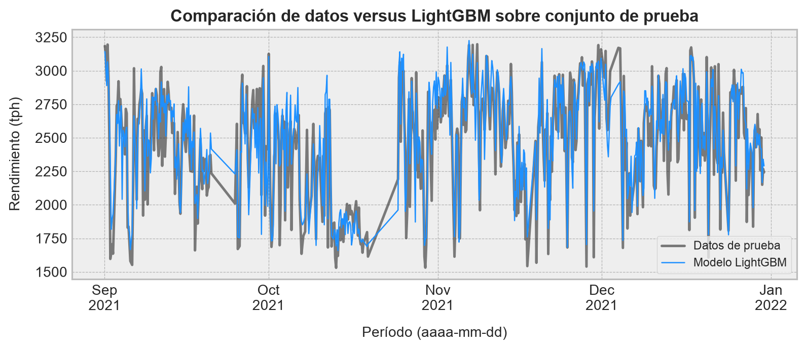
La comparación visual confirma lo que ya sugerían las métricas: La curva construida a partir del algoritmo LightGBM sigue razonablemente bien los regímenes principales del tratamiento. El modelo captura los bloques de mayor rendimiento, las caídas de nivel y varios ciclos de recuperación entre septiembre y diciembre. Donde más sufre es en los cambios bruscos y en algunos peaks o valles muy puntuales. Esta es una señal importante desde el punto de vista operacional: El modelo parece adecuado para representar el comportamiento estructural del molino, pero no necesariamente para anticipar eventos transitorios muy rápidos, que probablemente dependen de variables no incluidas, acciones manuales, perturbaciones aguas arriba o cambios de mineral de corta duración (granularidad menor a la considerada en la construcción del modelo).
Definiremos los residuos sobre el conjunto de prueba como
\[ e_{i}=y_{i}-\hat{y}_{i} \tag{3.20} \]
Así, un residuo positivo indica que el modelo subestimó el rendimiento real, mientras que un residuo negativo indica que lo sobreestimó.
# Calculamos los residuos sobre el conjunto de prueba.
residuals_test = pd.Series(
y_test.values - y_pred_test,
index=y_test.index,
name="Residual",
)
# Generamos el resumen y lo mostramos en pantalla.
residual_summary = residuals_test.describe().to_frame()
residual_summary| Residual | |
|---|---|
| count | 606.000000 |
| mean | -35.859811 |
| std | 162.662011 |
| min | -690.572385 |
| 25% | -140.282778 |
| 50% | -43.026540 |
| 75% | 61.149727 |
| max | 514.338931 |
El resumen de residuos muestra una media de aproximadamente \(-35.9\) tph y una mediana cercana a \(-43.0\) tph. Como definimos \(e_i=y_i-\hat{y}_i\), valores negativos indican sobreestimación; por lo tanto, el modelo tiende a predecir un rendimiento levemente mayor al observado. El sesgo no es demasiado grande respecto de la escala del proceso, pero sí conviene tenerlo presente si el modelo se usara eventualmente como referencia operacional. El \(50\%\) central de los errores queda entre aproximadamente \(-140\) y \(61\) tph, mientras que la desviación estándar residual es cercana a \(163\) tph, consistente con el RMSE de prueba. Los extremos, sin embargo, son relevantes: El mínimo llega a casi \(-691\) tph y el máximo a \(514\) tph. En otras palabras, el error típico es razonable, pero existen eventos puntuales donde el modelo falla fuerte, especialmente por sobreestimación.
fig, ax = plt.subplots(figsize=(9, 4))
ax.step(
residuals_test.index,
residuals_test.values,
color="royalblue",
lw=1.0,
)
ax.axhline(0, color="black", lw=1.0, linestyle="--")
# Etiquetamos ejes, título y leyenda.
ax.set_ylabel("Residual (tph)", fontsize=11, labelpad=10)
ax.set_xlabel("Período (aaaa-mm)", fontsize=11, labelpad=10)
ax.set_title(
"Residuales sobre el conjunto de prueba",
fontsize=13,
fontweight="bold",
)
ax.xaxis.set_major_locator(MonthLocator(interval=1))
ax.xaxis.set_major_formatter(DateFormatter("%b\n%Y"))
ax.tick_params(axis="x", labelrotation=0)
plt.tight_layout()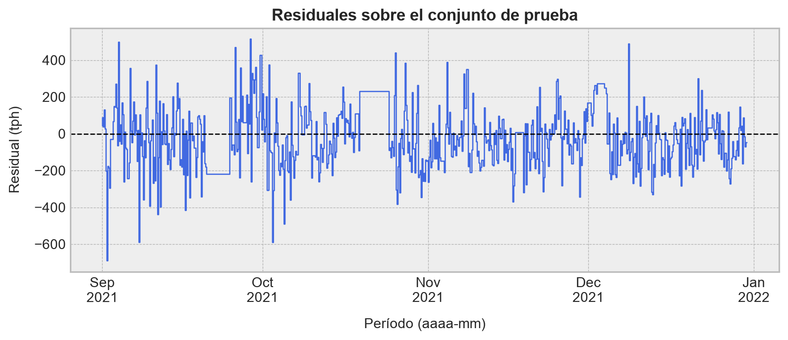
La serie temporal de residuos muestra que los errores no son ruido blanco perfecto. Hay episodios con desviaciones negativas importantes al inicio de septiembre y algunos bloques positivos hacia fines de septiembre e inicios de octubre. Después de noviembre, los residuos se ven más centrados, aunque siguen apareciendo eventos puntuales de magnitud considerable. Lo positivo es que no se observa una deriva monotónica clara durante todo el período de prueba: El modelo no parece ir perdiendo calibración progresivamente. Lo no tan bueno es que los errores se agrupan por episodios, lo que sugiere estados operacionales no completamente explicados por las variables disponibles.
También resulta útil contrastar residuos contra valores predichos. En este gráfico, la nube se mantiene mayoritariamente alrededor de cero en casi todo el rango de rendimiento predicho, sin una forma de abanico demasiado evidente. Esto sugiere que la varianza del error no crece de manera explosiva con el nivel de tratamiento estimado. Sin embargo, entre \(2600\) y \(3000\) tph aparece una concentración algo más negativa de residuos, lo que refuerza la lectura anterior: En ciertos regímenes de alto rendimiento, el modelo tiende a ser un poco optimista. Para uso operacional, esto significa que las recomendaciones en la zona alta de tratamiento deberían tomarse con cautela y, ojalá, acompañarse de bandas de incertidumbre:
# Generamos nuestro gráfico.
fig, ax = plt.subplots(figsize=(9, 4))
ax.scatter(
y_pred_test,
residuals_test.values,
s=18,
alpha=1.0,
color="cornflowerblue",
edgecolor="white",
linewidth=0.4,
)
ax.axhline(0, color="black", lw=1.0, linestyle="--")
# Rotulamos ejes y título.
ax.set_xlabel("Rendimiento predicho (tph)", fontsize=11, labelpad=10)
ax.set_ylabel("Residual (tph)", fontsize=11, labelpad=10)
ax.set_title(
"Residuales versus rendimiento predicho",
fontsize=13,
fontweight="bold",
)
plt.tight_layout()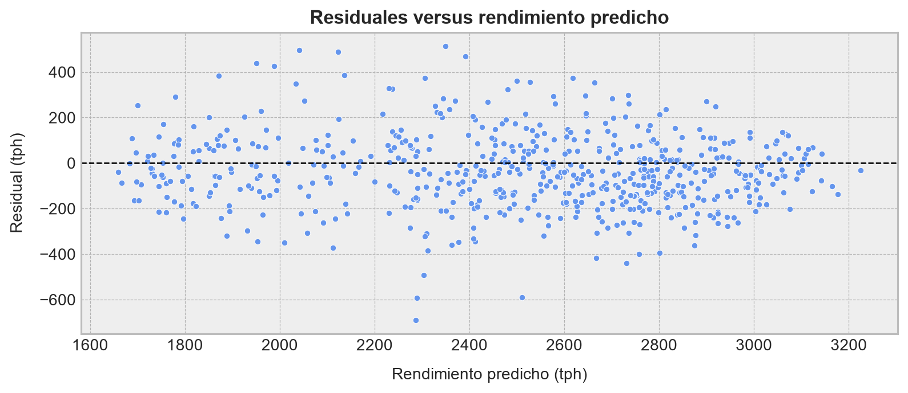
Finalmente, podemos construir un QQ plot de residuos. No lo usaremos para exigir normalidad perfecta, porque los residuos de un modelo que simula los resultados esperados de un proceso industrial rara vez se comportan como una muestra Gaussiana impecable. Lo usaremos como diagnóstico de colas: Si los puntos se separan mucho de la recta en los extremos, el modelo comete errores extremos con mayor frecuencia de la que esperaríamos bajo un ruido simétrico y liviano:
# Construimos el QQ plot.
fig, ax = plt.subplots(figsize=(9, 5))
probplot(residuals_test.dropna().values, dist="norm", plot=ax)
ax.get_lines()[0].set_markerfacecolor("dodgerblue")
ax.get_lines()[0].set_markeredgecolor("white")
ax.get_lines()[0].set_alpha(0.75)
ax.get_lines()[1].set_color("black")
ax.get_lines()[1].set_linewidth(1.2)
# Rotulamos ejes y título.
ax.set_title(
"QQ plot de residuales sobre conjunto de prueba",
fontsize=13,
fontweight="bold",
)
ax.set_xlabel("Cuantiles teóricos normales", fontsize=11, labelpad=10)
ax.set_ylabel("Cuantiles observados", fontsize=11, labelpad=10)
plt.tight_layout()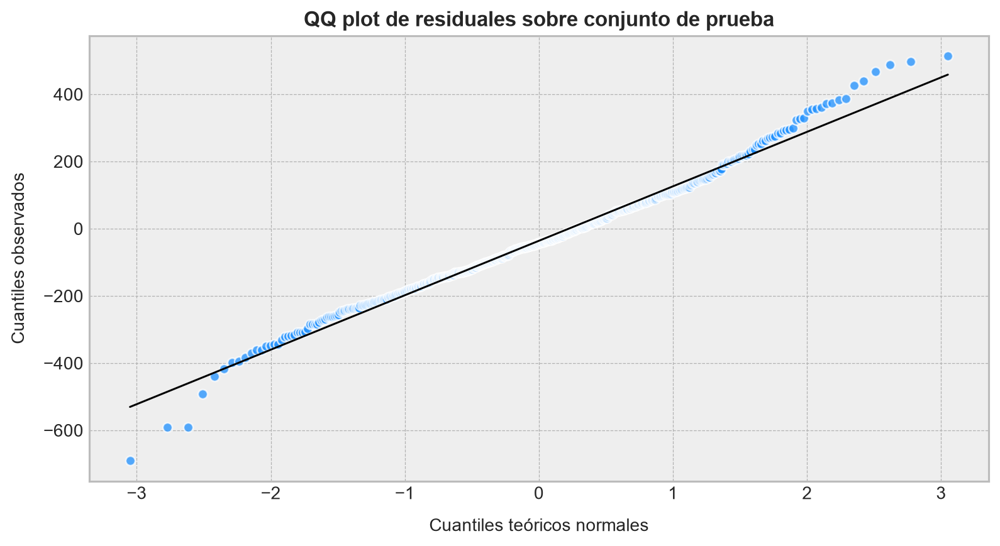
El QQ plot confirma una lectura bastante típica en datos industriales: La parte central de la distribución residual sigue razonablemente bien la recta normal, pero las colas se separan con claridad. La cola negativa es especialmente relevante, porque contiene errores de sobrepredicción grandes. Esto no invalida el modelo; más bien indica que el error no debería tratarse como una perturbación Gaussiana liviana. Para una implementación operacional, sería recomendable complementar el pronóstico puntual con intervalos de predicción, modelos cuantílicos o reglas de alerta para eventos donde el residuo esperado pueda volverse extremo.
En conjunto, los resultados son buenos, pero no perfectos, que es justamente lo esperable en una aplicación realista de molienda SAG. El modelo captura una fracción alta de la variabilidad del rendimiento, generaliza bien hacia un período posterior y mantiene errores típicos razonables para la escala del proceso. Sus principales debilidades están en los eventos transitorios, en la cola negativa de residuos y en una ligera tendencia a sobreestimar en algunos regímenes de alto tratamiento. Por lo tanto, LightGBM queda bien posicionado como modelo de monitoreo, simulación local o apoyo a decisiones, pero no como reemplazo directo de criterio operacional ni como predictor infalible de eventos abruptos.
Este ejercicio deja ver el valor práctico de la librería LightGBM en problemas industriales tabulares. Desde la perspectiva del flujo de trabajo, casi todo se parece a Scikit-Learn: Cargamos datos, definimos una pipeline, construimos una grilla de hiperparámetros, aplicamos validación cruzada y evaluamos métricas. La diferencia está en el estimador final: En vez de usar un objeto GradientBoostingRegressor clásico, usamos un motor especializado que discretiza variables en histogramas, crece árboles hoja-a-hoja y está diseñado para entrenar rápido en matrices de datos grandes.
Hay, sin embargo, una advertencia importante. Precisamente porque LightGBM es rápido y flexible, puede sobreajustar con mucha facilidad si se le permite construir demasiadas hojas, demasiados árboles o particiones demasiado específicas. En este tipo de problemas, num_leaves, min_child_samples, learning_rate, subsample y colsample_bytree no son detalles cosméticos: Son controles directos sobre la complejidad efectiva del modelo. En molienda SAG, donde las señales contienen ruido operacional, cambios de mineral, detenciones, campañas y condiciones de proceso que no siempre están completamente medidas, validar con cuidado no es una formalidad estadística: Es la diferencia entre un modelo útil y una máquina elegante para memorizar historia. ◼︎
3.3 Categorical boosting (o CatBoost)
El segundo modelo especializado que revisaremos se denomina Boosting Categórico o CatBoost (del inglés Categorical Boosting), el cual es una variante del algoritmo de gradient boosting diseñada explícitamente para trabajar con datos tabulares donde las variables categóricas constituyen una parte central del problema. Este modelo fue presentado por primera vez en un paper de Prokhorenkova et al. (2018) y ha sido implementado en la librería de código abierto CatBoost de Python.
El algoritmo CatBoost se introduce poniendo énfasis en dos ideas que, en problemas reales, suelen pasarse por alto con suma facilidad:
- Las variables categóricas no deberían tratarse ingenuamente mediante codificaciones que usen la variable objetivo de la propia observación que estamos transformando.
- El procedimiento de boosting puede introducir un sesgo sutil si el mismo dato se usa para construir el modelo actual y para estimar el gradiente que luego intentará corregirlo.
Ambos problemas tienen una raíz común, denominado fuga de información estadística o, más marketero, data leakage. No necesariamente una fuga burda, como entrenar con datos del futuro, sino una fuga más fina: Permitir que la observación \(i\) influya en cualquier transformación que luego se usará para predecir \(y_{i}\), o permitir que el error residual de \(i\) sea calculado con un modelo que ya se ajustó usando \(y_{i}\). En conjuntos pequeños, o con variables categóricas de alta cardinalidad, esto puede producir un optimismo artificial muy marcado. El modelo parece aprender patrones potentes, pero parte de ese poder proviene de haber mirado la respuesta por una rendija.
Important¿Qué es el data leakage?
Ah bueno… los conceptos clásicos de machine learning jamás pasan de moda ¿no? La fuga de información estadística (data leakage) ocurre cuando la información de la variable objetivo se filtra hacia el modelo de manera que no debería. En mis tiempos universitarios, cuando el aprendizaje automático ni siquiera era una disciplina consolidada, esto se conocía en la estadística clásica como hacer trampa.
El data leakage puede suceder de muchas formas, pero las más comunes son:
Usar variables que, en la práctica, no estarán disponibles al momento de hacer predicciones. Por ejemplo, usar el precio de cierre de un activo financiero para predecir su precio de apertura del día siguiente. Con el perdón de los colegas de finanzas, esto es trampa: El precio de cierre no está disponible al momento de predecir la apertura. Y es un error muy común en la literatura académica, donde se reportan resultados espectaculares que luego no se pueden reproducir en la práctica. Lo sé porque, en su tiempo, usaba datasets financieros para jugar y aprender. Y me estrellé contra este particular “detalle”.
Usar información de la variable objetivo para transformar las variables de entrada. Un ejemplo clásico ocurre en metalurgia, cuando deseamos predecir el rendimiento de un molino. La teoría de la metalurgia sostiene que el rendimiento depende de la dureza del mineral, pero la dureza no siempre se mide directamente, sino que existe como información metalúrgica orientada al diseño de la planta misma en un modelo de bloques más que a datos operacionales. Sin embargo, es común (más de lo que me gustaría reconocer) que muchos colegas reemplacen esa variable por el consumo específico de energía del molino, que –literamente– es la razón entre potencia y rendimiento. Es decir… ¿En serio vas a usar el rendimiento para predecir el rendimiento? Esto es un ejemplo descarado de data leakage. Y después nos preguntamos por qué los modelos parecen funcionar de maravilla en entrenamiento y validación, pero luego fallan estrepitosamente en producción.
Mantendremos la notación típica que hemos ido desarrollando a lo largo del blog. Sea pues \(\mathcal{D}=\left\{\left(\mathbf{x}_{i},y_i\right)\right\}_{i=1}^{m}\) un conjunto de entrenamiento, donde \(\mathbf{x}_i=(x_{i1},\ldots,x_{in})\) representa las variables de entrada de la observación \(i\). Denotaremos por \(\mathcal{J}_{\mathrm{cat}}\subseteq\{1,\ldots,n\}\) el conjunto de índices correspondientes a variables categóricas. Para \(j\in\mathcal{J}_{\mathrm{cat}}\), el valor \(x_{ij}\) pertenece a un conjunto discreto de categorías \(\mathcal{C}_j\). Algunas de estas categorías pueden aparecer muchas veces; otras, apenas unas pocas. Este detalle, que parece menor, es precisamente donde empiezan los problemas.
3.3.1 Codificación categórica ingenua y fuga de objetivo
Una forma muy usual de transformar una variable categórica consiste en reemplazar cada categoría por una estadística calculada a partir de la variable objetivo. En regresión, por ejemplo, podemos reemplazar una categoría \(c\in\mathcal{C}_j\) por el promedio observado del objetivo entre todas las instancias que pertenecen a dicha categoría. Es decir,
\[ \widehat{\mu}_{j}(c)= \frac{ \sum_{k=1}^{m}y_k\mathbf{1}\{x_{kj}=c\} }{ \sum_{k=1}^{m}\mathbf{1}\{x_{kj}=c\} } \tag{3.21} \]
Donde \(\mathbf{1}\) es la función indicatriz.
Esta transformación se conoce como codificación por estadístico de respuesta o TSE (del inglés target statistic encoding). La intuición hasta suena razonable: Si una categoría ha estado asociada históricamente a valores altos de \(y\), entonces esa categoría debería aportar información predictiva. En clasificación binaria, la misma idea se traduce en reemplazar una categoría por la proporción empírica de observaciones positivas dentro de ella.
El problema, por supuesto, aparece cuando usamos (3.21) para transformar el propio conjunto de entrenamiento. Si la observación \(i\) pertenece a la categoría \(c=x_{ij}\), entonces \(y_{i}\) participa directamente en el numerador de \(\widehat{\mu}_{j}(c)\). Es decir, la representación numérica que usaremos para predecir \(y_{i}\) ya contiene una fracción de \(y_{i}\). Para categorías frecuentes, el efecto puede llegar a diluirse. Pero para categorías más raras, puede ser enorme. En el caso extremo de una categoría que aparece sólo una vez, tenemos
\[ \widehat{\mu}_{j}(x_{ij})=y_i \tag{3.22} \]
En tal caso, la codificación se transforma en una copia disfrazada de la variable objetivo. Un árbol de decisión puede explotar esto de manera inmediata, construyendo particiones que parecen extraordinariamente precisas durante el proceso de entrenamiento, pero que no tienen el mismo comportamiento fuera de esa muestra. Esta es una forma de sobreajuste inducido por la codificación.
Para reducir la varianza de (3.21), es común agregar un término de “suavizado” hacia un valor base, digamos \(\mu_0\). Por ejemplo, el promedio global del objetivo:
\[ \operatorname{TS}_{j}(c)= \frac{ \sum_{k=1}^{m}y_k\mathbf{1}\{x_{kj}=c\}+\alpha\mu_0 }{ \sum_{k=1}^{m}\mathbf{1}\{x_{kj}=c\}+\alpha } \tag{3.23} \]
donde \(\alpha>0\) controla la fuerza del suavizado. Si una categoría aparece pocas veces, el valor codificado se acerca a \(\mu_0\); si aparece muchas veces, se acerca al promedio empírico de la categoría. Esto ayuda, pero no resuelve completamente el problema de data leakage: Mientras \(y_{i}\) siga participando en la construcción de la codificación usada para la propia observación \(i\), sigue existiendo fuga.
Podemos escribir el problema de manera explícita. Para la observación \(i\), la codificación ingenua asociada a \(x_{ij}\) depende del conjunto
\[ \mathcal{A}_{ij}^{\mathrm{naive}}= \left\{ k:x_{kj}=x_{ij} \right\} \tag{3.24} \]
y, en general, \(i\in\mathcal{A}_{ij}^{\mathrm{naive}}\). Por lo tanto, la transformación \(\operatorname{TS}_{j}(x_{ij})\) no es independiente de \(y_{i}\). Este punto es pequeño en apariencia, pero grande en consecuencias.
3.3.2 Estadísticos ordenados para variables categóricas
La solución propuesta por el algoritmo CatBoost consiste en construir la codificación categórica de una observación usando sólo información proveniente de observaciones anteriores bajo una permutación aleatoria del conjunto de entrenamiento. Sea \(\sigma\) una permutación de los índices \(\{1,\ldots,m\}\), donde \(\sigma(i)\) representa la posición de la observación \(i\) dentro de dicha permutación. Para codificar la categoría \(x_{ij}\) de la observación \(i\), el algoritmo considera únicamente observaciones \(k\) que aparecen antes que \(i\) en la permutación. Es decir,
\[ \mathcal{A}_{ij}^{\sigma}= \left\{ k:x_{kj}=x_{ij}\ \wedge\ \sigma(k)<\sigma(i) \right\} \tag{3.25} \]
La codificación ordenada queda definida como
\[ \operatorname{OTS}_{ij}^{\sigma}= \frac{ \sum_{k:\sigma(k)<\sigma(i)}y_k\mathbf{1}\{x_{kj}=x_{ij}\}+\alpha\mu_0 }{ \sum_{k:\sigma(k)<\sigma(i)}\mathbf{1}\{x_{kj}=x_{ij}\}+\alpha } \tag{3.26} \]
donde \(\operatorname{OTS}\) significa ordered target statistic. Lo crucial es que \(y_i\) no aparece en el numerador de (3.26). Por construcción, la observación \(i\) no participa en su propia codificación. Si una categoría no ha aparecido antes en la permutación, la codificación se reduce al valor a priori suavizado \(\mu_0\). Si aparece varias veces antes, la codificación aprovecha la información histórica disponible, pero sin mirar el objetivo actual.
La diferencia entre (3.23) y (3.26) es, conceptualmente, la diferencia entre una transformación contaminada y una transformación causalmente defendible dentro del orden artificial impuesto por \(\sigma\). No estamos diciendo que el orden \(\sigma\) tenga significado temporal; se trata de unes especie de dispositivo estadístico para simular el comportamiento fuera del conjunto de entrenamiento. Cuando una observación nueva llega en un proceso de inferencia de prueba, su categoría se codifica usando datos ya vistos, no usando su propio \(y\), que justamente desconocemos. La permutación reproduce ese principio durante el entrenamiento.
El algoritmo CatBoost suele utilizar más de una permutación y puede incorporar variantes de estos estadígrafos para reducir la varianza del modelo resultante. Si \(\sigma_{1},\ldots,\sigma_{S}\) son \(S\) permutaciones independientes, una forma conceptual de estabilizar la codificación consiste en promediar
\[ \overline{\operatorname{OTS}}_{ij}= \frac{1}{S}\sum_{s=1}^{S}\operatorname{OTS}_{ij}^{\sigma_s} \tag{3.27} \]
En la implementación real del algoritmo en la librería CatBoost, existen pasos intermedios de optimización importantes para no volver prohibitivo este cálculo. Sin embargo, la idea estadística de fondo es ésta: Construir variables categóricas que imiten el uso honesto de información pasada, sin introducir forzosamente ningún tipo de fuga.
def Ordered_Target_Statistics \(\mathcal{D},j,\sigma,\alpha,\mu_0\)
for cada observación \(i=1,\ldots,m\):
\(A\longleftarrow\{k:x_{kj}=x_{ij}\ \wedge\ \sigma(k)<\sigma(i)\}\).
\(N\longleftarrow |A|\).
\(S\longleftarrow \sum_{k\in A} y_k\).
\(z_{ij}\longleftarrow (S+\alpha\mu_0)/(N+\alpha)\).
return vector codificado \(\mathbf{z}_{j}=(z_{1j},\ldots,z_{mj})\).
3.3.3 Combinaciones de variables categóricas
Una fortaleza práctica del algoritmo CatBoost es que no se limita a codificar categorías aisladas. En datos tabulares reales, muchas señales aparecen como interacciones categóricas. Por ejemplo, en un problema industrial, la combinación entre turno, frente de alimentación, tipo de mineral y configuración operacional puede ser más informativa que cada variable por separado. Una codificación one-hot de todas las combinaciones posibles puede ser gigantesca; una codificación ingenua por objetivo puede sobreajustar brutalmente. El algoritmo aborda esto construyendo combinaciones categóricas de manera controlada.
Sea \(S\subseteq\mathcal{J}_{\mathrm{cat}}\) un subconjunto de variables categóricas. Definimos la categoría combinada
\[ \phi_{S}(\mathbf{x}_i)=\left(x_{ij}\right)_{j\in S} \tag{3.28} \]
Es decir, \(\phi_{S}(\mathbf{x}_i)\) es una tupla de categorías. Podemos aplicar la misma lógica ordenada a dicha tupla:
\[ \operatorname{OTS}_{iS}^{\sigma}= \frac{ \sum_{k:\sigma(k)<\sigma(i)}y_k\mathbf{1}\{\phi_{S}(\mathbf{x}_k)=\phi_{S}(\mathbf{x}_i)\}+\alpha\mu_0 }{ \sum_{k:\sigma(k)<\sigma(i)}\mathbf{1}\{\phi_{S}(\mathbf{x}_k)=\phi_{S}(\mathbf{x}_i)\}+\alpha } \tag{3.29} \]
Esta fórmula permite capturar interacciones categóricas sin enumerarlas todas desde el principio. En la práctica, el algoritmo CatBoost puede generar combinaciones a medida que construye los árboles que constituyen el ensamble: Cuando un árbol usa ciertas variables categóricas en divisiones previas, nuevas combinaciones pasan a estar disponibles para divisiones posteriores. Este es un detalle importante, porque evita abrir de golpe un espacio combinatorio enorme, pero permite que el modelo descubra interacciones útiles.
La tensión aquí es clara. Mientras más combinaciones permitimos, más expresivo se vuelve el modelo; pero también aumenta el riesgo de codificaciones con bajo soporte, es decir, categorías combinadas que aparecen pocas veces (corriendo el riesgo de overfitting). El suavizado mediante \(\alpha\) y el uso de estadísticos ordenados ayudan a controlar este riesgo, pero no eliminan la necesidad de validar cuidadosamente.
3.3.4 Desplazamiento de predicción en boosting
La segunda contribución conceptual importante del algoritmo CatBoost aparece incluso si todas las variables fueran numéricas. En el algoritmo clásico de gradient boosting, con árboles de decisión como modelos base, cada árbol se entrena para aproximar gradientes negativos de la función de pérdida. Recordemos que, en la iteración \(p\), el gradiente usual para la observación \(i\) es
\[ g_{ip}= \frac{\partial \ell\left(y_i,F_{p-1}(\mathbf{x}_i)\right)} {\partial F_{p-1}(\mathbf{x}_i)} \tag{3.30} \]
El detalle (incómodo, por cierto) es que \(F_{p-1}\) fue entrenado usando el conjunto completo, incluyendo la propia observación \((\mathbf{x}_{i},y_{i})\). Por lo tanto, el residuo o gradiente calculado para \(i\) no se obtiene a partir de un modelo independiente de \(y_{i}\). Esto genera lo que el trabajo original de Prokhorenkova et al denomina desplazamiento de predicción (del inglés prediction shift): La distribución de las predicciones usadas durante entrenamiento no coincide exactamente con la distribución de predicciones que veremos al aplicar el modelo sobre datos nuevos. Esto, de hecho, indica algo súper importante: Los modelos de boosting son pésimos extrapolando. Toda instancia nueva que se encuentre fuera del soporte de entrenamiento puede recibir predicciones sesgadas, porque el modelo nunca vio algo así antes.
En términos ideales, querríamos calcular el gradiente de \(i\) usando un modelo entrenado sin la observación \(i\). Si denotamos por \(F_{p-1}^{(-i)}\) al modelo construido sin usar \((\mathbf{x}_i,y_i)\), el gradiente ideal sería
\[ g_{ip}^{\star}= \frac{\partial \ell\left(y_i,F_{p-1}^{(-i)}(\mathbf{x}_i)\right)} {\partial F_{p-1}^{(-i)}(\mathbf{x}_i)} \tag{3.31} \]
Este gradiente es estadísticamente más limpio, porque la predicción usada para evaluar el error de \(i\) no fue ajustada usando \(y_{i}\). El problema es computacional: Entrenar un modelo distinto dejando fuera cada observación sería inviable. El algoritmo CatBoost aproxima esta idea mediante un procedimiento de boosting ordenado.
Sea nuevamente \(\sigma\) una permutación. Para una observación \(i\), el algoritmo intenta que la predicción usada para calcular su gradiente provenga de un modelo entrenado sólo con observaciones que aparecen antes que \(i\) en la permutación. Denotemos por
\[ \mathcal{P}_{i}^{\sigma}= \left\{ k:\sigma(k)<\sigma(i) \right\} \tag{3.32} \]
el prefijo anterior a \(i\). La versión ordenada del gradiente queda conceptualmente descrita como
\[ g_{ip}^{\sigma}= \frac{\partial \ell\left(y_i,F_{p-1}^{\mathcal{P}_{i}^{\sigma}}(\mathbf{x}_i)\right)} {\partial F_{p-1}^{\mathcal{P}_{i}^{\sigma}}(\mathbf{x}_i)} \tag{3.33} \]
donde \(F_{p-1}^{\mathcal{P}_{i}^{\sigma}}\) representa el ensamble construido usando únicamente observaciones previas a \(i\) bajo la permutación. Esta formulación reproduce la lógica fuera de muestra: Para calcular el error de una observación, usamos un modelo que no se entrenó con ella.
El efecto estadístico es importante. En un procedimiento de boosting clásico, el modelo puede volverse demasiado optimista sobre los puntos que ya vio, y los gradientes resultantes pueden subestimar errores que sí aparecerían fuera de muestra. En un procedimiento de boosting ordenado, los gradientes se calculan de manera más honesta, reduciendo el sesgo inducido por reutilizar la misma observación para ajustar y corregir.
def Ordered_Boosting \(\mathcal{D},r,\nu,\sigma\)
Inicializar modelos de prefijo \(F_{0}^{s}\) para \(s=1,\ldots,m\).
for \(p=1,\ldots,r\):
for cada observación \(i\):
Usar el modelo asociado al prefijo anterior a \(\sigma(i)\).
Calcular \(g_{ip}^{\sigma}\) según (3.33).
Ajustar un árbol \(h_p\) para aproximar los gradientes ordenados.
Actualizar los modelos de prefijo con \(F_{p}^{s}\longleftarrow F_{p-1}^{s}+\nu h_p^{s}\).
return ensamble final \(F_r\).
El Algoritmo 3.5 es deliberadamente conceptual. La implementación real no entrena literalmente \(m\) modelos independientes en cada iteración, porque eso sería carísimo a nivel computacional. Lo que hace es mantener estructuras auxiliares sobre permutaciones y prefijos para aproximar esta lógica de manera eficiente. Lo importante para nosotros no es el truco de ingeniería exacto, sino la idea estadística: El gradiente de una observación debe parecerse al gradiente que obtendríamos si esa observación fuera nueva.
3.3.5 Árboles simétricos
Otra pieza relevante del algoritmo CatBoost es el uso de árboles simétricos, también llamados árboles de memoria corta (del inglés oblivious trees). En un modelo de árbol de decisión clásico, cada nodo puede usar una variable y un umbral distinto. En un árbol simétrico, todos los nodos de una misma profundidad usan la misma regla de partición. Si el árbol tiene profundidad \(d\), entonces se seleccionan reglas de partición
\[ s_q(\mathbf{x})=\mathbf{1}\{x_{j_q}\leq t_q\},\quad q=1,\ldots,d \tag{3.34} \]
y cada observación queda asignada a una hoja mediante el vector binario
\[ \mathbf{b}(\mathbf{x})= \left(s_1(\mathbf{x}),s_2(\mathbf{x}),\ldots,s_d(\mathbf{x})\right)\in\{0,1\}^{d} \tag{3.35} \]
Por lo tanto, un árbol simétrico de profundidad \(d\) tiene exactamente \(2^d\) hojas, y puede escribirse como
\[ h_p(\mathbf{x})= \sum_{\mathbf{b}\in\{0,1\}^{d}}w_{\mathbf{b}p} \mathbf{1}\{\mathbf{b}(\mathbf{x})=\mathbf{b}\} \tag{3.36} \]
Esta restricción reduce la flexibilidad de cada árbol individual, pero aporta varias ventajas prácticas:
- La inferencia es rápida, porque basta evaluar una secuencia fija de reglas y construir un índice binario de hoja.
- El modelo tiende a ser más regular, lo que puede ayudar a controlar sobreajuste.
- La estructura del árbol es más estable y fácil de comprimir.
- Las interacciones aprendidas quedan organizadas por niveles, lo que simplifica ciertas implementaciones.
El precio es que un árbol simétrico puede necesitar más profundidad o más iteraciones para representar algunas particiones muy irregulares. Sin embargo, en modelos de boosting esto suele ser aceptable: Cada árbol individual no necesita resolver todo el problema; basta con que aporte una corrección útil que aprovecharemos después para mejorar progresivamente el desempeño del ensamble completo.
3.3.6 Esquema general del algoritmo CatBoost
Procedemos a reunir ahora las ideas principales desarrolladas previamente. El algoritmo CatBoost conserva la estructura de boosting aditivo, pero introduce una forma ordenada de construir variables categóricas, una forma ordenada de calcular gradientes y una familia de árboles base simétricos. El modelo final sigue teniendo la forma
\[ F_r(\mathbf{x})=F_0(\mathbf{x})+\sum_{p=1}^{r}\nu h_p(\mathbf{x}) \tag{3.37} \]
pero la manera en que se construyen las entradas de cada \(h_p\) y los gradientes que intenta aproximar es más cuidadosa que en el boosting estándar. El proceso completo se esquematiza en el Algoritmo 3.6.
def CatBoost \(\mathcal{D},r,\nu,\alpha,\{\sigma_s\}_{s=1}^{S}\)
Calcular un prior global \(\mu_0\longleftarrow m^{-1}\sum_{i=1}^{m}y_i\).
for cada permutación \(\sigma_s\):
Ordenar las observaciones según \(\sigma_s\).
for cada variable categórica \(j\in\mathcal{J}_{\mathrm{cat}}\):
Construir \(A_{ij}^{\sigma_s}=\{k:x_{kj}=x_{ij}\wedge\sigma_s(k)<\sigma_s(i)\}\).
Calcular \(z_{ij}^{\sigma_s}\longleftarrow(\sum_{k\in A_{ij}^{\sigma_s}}y_k+\alpha\mu_0)/(|A_{ij}^{\sigma_s}|+\alpha)\).
Construir estadísticos ordenados análogos para combinaciones \(\phi_S(\mathbf{x}_i)\) que aparezcan durante el crecimiento de los árboles.
Inicializar \(F_0(\mathbf{x})\longleftarrow\underset{c}{\mathrm{argmin}}\sum_{i=1}^{m}\ell(y_i,c)\).
for \(p=1,\ldots,r\):
Para cada observación \(i\), escoger una permutación \(\sigma_s\) y su prefijo \(\mathcal{P}_{i}^{\sigma_s}=\{k:\sigma_s(k)<\sigma_s(i)\}\).
Calcular \(g_{ip}^{\sigma_s}\longleftarrow\partial\ell(y_i,F_{p-1}^{\mathcal{P}_{i}^{\sigma_s}}(\mathbf{x}_i))/\partial F_{p-1}^{\mathcal{P}_{i}^{\sigma_s}}(\mathbf{x}_i)\).
for cada profundidad \(q=1,\ldots,d\) del árbol simétrico:
Evaluar candidatos \(s_q(\mathbf{x})=\mathbb{1}\{x_j\leq t\}\) sobre variables numéricas, estadísticos ordenados y combinaciones categóricas.
Escoger \((j_q,t_q)\longleftarrow\underset{j,t}{\mathrm{argmax}}\ \Delta\mathcal{L}_{p,q}(j,t)\).
Asignar cada observación a una hoja \(\mathbf{b}(\mathbf{x}_i)=(s_1(\mathbf{x}_i),\ldots,s_d(\mathbf{x}_i))\).
Estimar valores terminales \(w_{\mathbf{b}p}\) minimizando la pérdida aproximada sobre los gradientes ordenados.
Construir \(h_p(\mathbf{x})\longleftarrow\sum_{\mathbf{b}\in\{0,1\}^{d}}w_{\mathbf{b}p}\mathbb{1}\{\mathbf{b}(\mathbf{x})=\mathbf{b}\}\).
Actualizar \(F_p(\mathbf{x})\longleftarrow F_{p-1}(\mathbf{x})+\nu h_p(\mathbf{x})\).
return \(F_r\).
El Algoritmo 3.6 resume la arquitectura conceptual del método. La diferencia esencial con un boosting clásico no está en la forma final del ensamble, sino en el modo de producir información para entrenarlo. CatBoost intenta que las transformaciones categóricas y los gradientes se parezcan más a lo que ocurriría en predicción fuera de muestra. Por eso es especialmente atractivo cuando tenemos variables categóricas de alta cardinalidad, categorías raras, combinaciones categóricas relevantes o conjuntos de datos donde una codificación ingenua puede inflar artificialmente el desempeño de entrenamiento.
La lectura práctica es la siguiente, al comparar con el algoritmo LightGBM. El primero se concentra fuertemente en acelerar el entrenamiento mediante histogramas, muestreo basado en gradientes, agrupación de variables y crecimiento hoja-a-hoja. Este último, en cambio, pone el énfasis en reducir sesgos estadísticos asociados al manejo de categorías y al propio procedimiento de boosting. Ambos métodos son poderosos; atacan dolores distintos. En datos tabulares numéricos muy grandes, el algoritmo LightGBM puede ser extraordinariamente competitivo por velocidad. En datos con muchas variables categóricas, categorías raras o codificaciones delicadas, el algoritmo CatBoost suele ser una alternativa muy robusta.
3.3.7 Instalación y uso de la librería en Python
La librería CatBoost puede instalarse desde el índice de paquetes de Python mediante:
pip install catboostSu API principal expone clases como CatBoostRegressor y CatBoostClassifier. Al igual que la librería LightGBM, también ofrece una interfaz bastante cercana a Scikit-Learn: Podemos usar métodos fit() y predict(), definir hiperparámetros al construir el estimador, separar conjuntos de entrenamiento y prueba, y evaluar métricas de desempeño. Una diferencia práctica importante es que CatBoost permite declarar explícitamente cuáles columnas son categóricas mediante el argumento cat_features, evitando que tengamos que aplicar una codificación one-hot manual en muchos casos.
La gracia de la interfaz de CatBoost es que el usuario no necesita implementar manualmente las codificaciones ordenadas que discutimos antes. La librería se encarga de construirlas internamente, respetando la lógica estadística del método. Esta es una diferencia relevante frente a un flujo completamente basado en Scikit-Learn, donde muchas veces debemos decidir explícitamente si usamos OneHotEncoder, codificación ordinal, codificación por frecuencia o alguna variante de target encoding. Con CatBoost, el tratamiento de categorías no es un preprocesamiento externo improvisado: Es parte intrínseca del algoritmo.
Por supuesto, esto no significa que podamos olvidarnos de la validación. El algoritmo CatBoost reduce fuentes importantes de sesgo, pero sigue siendo un modelo flexible de boosting. Hiperparámetros como iterations, learning_rate, depth, l2_leaf_reg, subsample, random_strength y bagging_temperature controlan su capacidad efectiva. En problemas industriales, especialmente cuando los datos tienen estructura temporal o campañas operacionales, la validación debe respetar esa estructura. Un modelo que se ve impecable bajo particiones aleatorias puede degradarse si lo enfrentamos a mineral nuevo, cambios de revestimientos, cambios de estrategia operacional o condiciones de proceso no observadas durante el entrenamiento.
Ejemplo 3.2 – Predicción con variables categóricas en Cat in the Dat II: Para estudiar la implementación del algoritmo CatBoost en un escenario donde las variables categóricas son el centro del problema, haremos uso del conjunto de datos provisto por el desafío Cat in the Dat II de Kaggle. El nombre es un pequeño juego de palabras: No se trata de gatos, sino de datos categóricos. El problema fue diseñado precisamente para practicar codificación de variables categóricas, tratamiento de valores faltantes y modelamiento supervisado sobre variables binarias, nominales y ordinales.
El conjunto de datos contiene observaciones anónimas. Cada fila representa una instancia, cada columna representa una variable categórica o discreta, y el objetivo target indica si la observación pertenece a la clase positiva. La gracia del ejercicio es que casi no existe semántica externa: No sabemos, por ejemplo, si nom_5 = "de4c57ee2" representa un equipo, una zona, un cliente, una condición operacional o una etiqueta inventada. Por lo tanto, este conjunto de datos nos obliga a concentrarnos en la estructura estadística del problema, del mismo modo en que muchas veces ocurre cuando recibimos variables categóricas ya codificadas desde sistemas industriales heredados.
En minería pasa algo parecido con etiquetas de dominio poco limpias: Códigos de frente, dominios geometalúrgicos, campañas, turnos, polígonos de planificación, estados de equipos, operadores, materiales o rutas de transporte. A veces el nombre de la categoría no tiene valor interpretativo directo, pero su patrón histórico sí puede ser predictivo. El algoritmo CatBoost es especialmente útil en estos casos, porque permite trabajar directamente con categorías sin convertirlas manualmente en cientos o miles de columnas binarias.
El archivo completo de la competencia queda disponible para descarga directa:
El zip provisto contiene los archivos train.csv, test.csv y sample_submission.csv. En este ejemplo trabajaremos únicamente con train.csv, porque evidentemente nuestro objetivo no es enviar una solución a Kaggle, sino entender cómo se comporta el algoritmo CatBoost cuando el conjunto de variables es categórico casi por completo.
Partimos con las importaciones usuales. Debido a que el problema en cuestión es de clasificación, haremos uso del objeto CatBoostClassifier. Nos traeremos además algunas métricas de desempeño usuales para problemas de este tipo:
from pathlib import Path
from zipfile import ZipFile
from catboost import CatBoostClassifier
from sklearn.calibration import calibration_curve
from sklearn.metrics import (
average_precision_score,
balanced_accuracy_score,
brier_score_loss,
confusion_matrix,
precision_recall_curve,
roc_auc_score,
roc_curve,
)
from sklearn.model_selection import train_test_splitAccedemos pues a nuestros datos:
# Definimos la ruta al archivo comprimido de la competencia.
catdat_zip_path = Path("datasets/cat_in_the_dat_ii_kaggle_competition.zip")
# Leemos el archivo de entrenamiento directamente desde el zip.
with ZipFile(catdat_zip_path) as zf:
with zf.open("train.csv") as f:
catdat_data = pd.read_csv(f)
# Revisamos las dimensiones del conjunto de entrenamiento.
catdat_data.shape(600000, 25)El conjunto de datos en cuestión es, en esencia, algo grande: Hablamos de \(600000\) filas y \(25\) columnas. La columna id indexa las observaciones con un conteo de tipo entero usual, mientras que la columna target contiene la clase a predecir y las \(23\) columnas restantes corresponden a las variables predictoras que usaremos como entrada en nuestro modelo.
A continuación, chequeamos la estructura del DataFrame:
# Inspeccionamos las primeras filas de nuestro dataset.
catdat_data.head()| id | bin_0 | bin_1 | bin_2 | bin_3 | bin_4 | nom_0 | nom_1 | nom_2 | nom_3 | ... | nom_9 | ord_0 | ord_1 | ord_2 | ord_3 | ord_4 | ord_5 | day | month | target | |
|---|---|---|---|---|---|---|---|---|---|---|---|---|---|---|---|---|---|---|---|---|---|
| 0 | 0 | 0.0 | 0.0 | 0.0 | F | N | Red | Trapezoid | Hamster | Russia | ... | 02e7c8990 | 3.0 | Contributor | Hot | c | U | Pw | 6.0 | 3.0 | 0 |
| 1 | 1 | 1.0 | 1.0 | 0.0 | F | Y | Red | Star | Axolotl | NaN | ... | f37df64af | 3.0 | Grandmaster | Warm | e | X | pE | 7.0 | 7.0 | 0 |
| 2 | 2 | 0.0 | 1.0 | 0.0 | F | N | Red | NaN | Hamster | Canada | ... | NaN | 3.0 | NaN | Freezing | n | P | eN | 5.0 | 9.0 | 0 |
| 3 | 3 | NaN | 0.0 | 0.0 | F | N | Red | Circle | Hamster | Finland | ... | f9d456e57 | 1.0 | Novice | Lava Hot | a | C | NaN | 3.0 | 3.0 | 0 |
| 4 | 4 | 0.0 | NaN | 0.0 | T | N | Red | Triangle | Hamster | Costa Rica | ... | c5361037c | 3.0 | Grandmaster | Cold | h | C | OZ | 5.0 | 12.0 | 0 |
5 rows × 25 columns
Notemos que el diseño de las variables es deliberadamente pedagógico:
bin_*: Variables binarias. Algunas aparecen como \(0\)–\(1\) y otras como categorías del tipoT/FoY/N. Como aprendimos en la entrada dedicada a los modelos de clasificación, la distinción lexicográfica es irrelevante mientras acordemos previamente la traducción de las categorías a una del tipo numérico.nom_*: Variables nominales. Esto es, categorías sin orden natural. Algunas tienen pocos niveles y otras tienen cardinalidad alta.ord_*: Variables ordinales. Esto es, categorías con algún orden subyacente que, en la medida de lo posible, nos gustaría preservar.dayymonth: Variables discretas asociadas a día y mes. Para este ejercicio en particular, las trataremos igualmente como categorías, no como magnitudes continuas.
Aunque algunas columnas parezcan numéricas, conceptualmente no las trataremos como variables continuas. En términos prácticos, month=12 no debería interpretarse como “seis veces más” que month=2; simplemente representa una categoría temporal. Esta distinción es importante: En el algoritmo CatBoost podemos declarar todas estas columnas como categóricas y dejar que el algoritmo construya sus representaciones internas.
A continuación, construiremos un pequeño reporte que resuma estructuralmente las variables categóricas que pueblan este conjunto de datos:
# Separamos variables de entrada y de respuesta.
catdat_features = [
col_j for col_j in catdat_data.columns
if col_j not in ["id", "target"]
]
# Construimos un resumen de cardinalidad y valores faltantes.
catdat_feature_report = pd.DataFrame(
{
"Variable": catdat_features,
"Valores únicos": [
catdat_data[col].nunique(dropna=True)
for col in catdat_features
],
"Valores faltantes (%)": [
100 * catdat_data[col].isna().mean()
for col in catdat_features
],
"Tipo original": [
str(catdat_data[col].dtype)
for col in catdat_features
],
}
)
# Mostramos este reporte en pantalla.
catdat_feature_report| Variable | Valores únicos | Valores faltantes (%) | Tipo original | |
|---|---|---|---|---|
| 0 | bin_0 | 2 | 2.982333 | float64 |
| 1 | bin_1 | 2 | 3.000500 | float64 |
| 2 | bin_2 | 2 | 2.988333 | float64 |
| 3 | bin_3 | 2 | 3.002333 | str |
| 4 | bin_4 | 2 | 3.007833 | str |
| 5 | nom_0 | 3 | 3.042000 | str |
| 6 | nom_1 | 6 | 3.026000 | str |
| 7 | nom_2 | 6 | 3.005833 | str |
| 8 | nom_3 | 6 | 3.020167 | str |
| 9 | nom_4 | 4 | 3.005833 | str |
| 10 | nom_5 | 1220 | 2.963000 | str |
| 11 | nom_6 | 1519 | 3.021833 | str |
| 12 | nom_7 | 222 | 3.000500 | str |
| 13 | nom_8 | 222 | 2.959167 | str |
| 14 | nom_9 | 2218 | 3.012167 | str |
| 15 | ord_0 | 3 | 3.048000 | float64 |
| 16 | ord_1 | 5 | 3.006833 | str |
| 17 | ord_2 | 6 | 3.012500 | str |
| 18 | ord_3 | 15 | 2.986000 | str |
| 19 | ord_4 | 26 | 2.988333 | str |
| 20 | ord_5 | 190 | 2.952167 | str |
| 21 | day | 7 | 2.992000 | float64 |
| 22 | month | 12 | 2.998000 | float64 |
La tabla anterior deja ver dos rasgos muy convenientes para nuestro ejercicio. Primero, casi todas las variables tienen alrededor de un \(3\%\) de valores faltantes. Segundo, existen variables de alta cardinalidad: nom_5, nom_6 y nom_9 tienen cientos o miles de niveles. Este es precisamente el tipo de situación donde una codificación de tipo one-hot puede volverse incómoda: El número de columnas crece explosivamente, muchas categorías quedan con bajo soporte y el riesgo de construir representaciones demasiado específicas aumenta. Dicho de forma menos elegante, no queremos aumentar artificialmente la dificultad de este problema añadiendo tantas columnas como niveles existen en cada variable categórica.
Naturalmente, también queremos verificar si este conjunto de datos presenta algún nivel de desbalance entre las clases que constituyen la variable objetivo:
# Calculamos la distribución de la variable objetivo.
catdat_target_balance = (
catdat_data["target"]
.value_counts()
.sort_index()
.rename_axis("Clase")
.reset_index(name="Frecuencia")
)
# Generamos una columna con la frecuencia relativa de cada clase.
catdat_target_balance["Proporción"] = (
catdat_target_balance["Frecuencia"]
/ catdat_target_balance["Frecuencia"].sum()
)# Graficamos la proporción de clases de interés.
fig, ax = plt.subplots(figsize=(9, 4))
ax.bar(
catdat_target_balance["Clase"].astype(str),
catdat_target_balance["Proporción"],
color=["dodgerblue", "firebrick"],
edgecolor="white",
)
for i, row_i in catdat_target_balance.iterrows():
ax.text(
i,
row_i["Proporción"] + 0.01,
f"{row_i['Proporción']:.1%}",
ha="center",
va="bottom",
fontsize=11,
fontweight="bold",
)
# Rotulamos el gráfico.
ax.set_ylim(0, 0.9)
ax.set_xlabel("Clase", fontsize=11, labelpad=10)
ax.set_ylabel("Proporción", fontsize=11, labelpad=10)
ax.set_title(
"Balance de clases para nuestro problema",
fontsize=13,
fontweight="bold",
)
plt.tight_layout()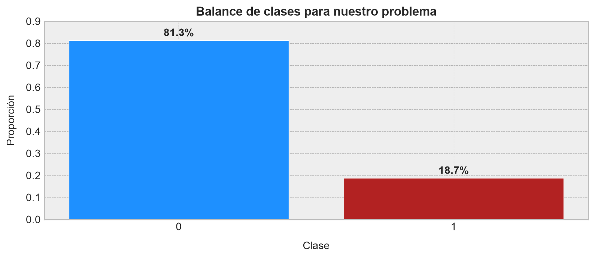
La clase positiva representa cerca del \(19\%\) de las observaciones. No estamos frente a un caso extremo de desbalance, pero sí ante un problema donde la exactitud puede ser una métrica engañosa. Un clasificador trivial que siempre predice la clase \(Y=0\) tendría una exactitud cercana al \(81\%\), pero sería completamente inútil para encontrar casos positivos. Por eso evaluaremos el modelo con métricas basadas en ranking y recuperación de verdaderos positivos, tales como la curva ROC y el trade-off entre precisión y sensibilidad.
Para mantener el tiempo de ejecución bajo control, entrenaremos sobre una muestra estratificada de \(150000\) observaciones. Esto no cambia la naturaleza del ejemplo: Seguimos teniendo suficientes datos para que aparezcan categorías frecuentes, raras, valores faltantes y un desbalance moderado. En una aplicación productiva o en una competencia formal, naturalmente, usaríamos el conjunto completo:
# Tomamos una muestra reproducible para mantener razonable el tiempo de ejecución.
N_SAMPLES = 150000
catdat_sample = (
catdat_data
.sample(n=N_SAMPLES, random_state=42)
.reset_index(drop=True)
)
# Separamos variables y objetivo.
X_catdat = catdat_sample[catdat_features].copy()
y_catdat = catdat_sample["target"].copy()La librería CatBoost requiere que toda columna categórica esté representada a nivel de tipos como string. En la práctica, debemos asegurarnos de que Pandas exprese tales columnas usando un tipo adecuado, como object:
# Expresamos las columnas como `object` y rellenamos registros faltantes con un valor
# centinela estándar igual a "__MISSING__".
X_catdat = (
X_catdat
.astype("object")
.where(X_catdat.notna(), "__MISSING__")
)
# Ahora llevamos las columnas a tipo string.
for col_j in X_catdat.columns:
X_catdat[col_j] = X_catdat[col_j].astype(str)
# Todas las variables predictoras serán tratadas como categóricas.
catdat_cat_features = list(X_catdat.columns)A fin de preservar la distribución tanto de categorías como de clases objetivo, implementaremos una separación entre datos de entrenamiento y de prueba a partir de un muestreo estratificado:
# Split conforme un muestreo estratificado
X_catdat_train, X_catdat_valid, y_catdat_train, y_catdat_valid = train_test_split(
X_catdat,
y_catdat,
test_size=0.25,
random_state=42,
stratify=y_catdat,
)
# Resumimos los resultados del muestreo en un DataFrame.
pd.DataFrame(
{
"Conjunto": ["Entrenamiento", "Validación"],
"Filas": [len(y_catdat_train), len(y_catdat_valid)],
"Proporción clase positiva": [
y_catdat_train.mean(),
y_catdat_valid.mean(),
],
}
)| Conjunto | Filas | Proporción clase positiva | |
|---|---|---|---|
| 0 | Entrenamiento | 112500 | 0.186498 |
| 1 | Validación | 37500 | 0.186480 |
Definimos ahora el modelo. Como comentamos previamente, usaremos CatBoostClassifier, declarando explícitamente las columnas categóricas mediante cat_features. Setearemos igualmente el argumento auto_class_weights="Balanced", para que el modelo preste más atención a la clase positiva, que es minoritaria. Este ajuste no es obligatorio, pero sirve para mostrar algo importante: En problemas desbalanceados, el umbral de discriminación por defecto \(P(y_{i}=1)=0.5\) puede producir un compromiso distinto entre falsos positivos y falsos negativos:
# Definimos el clasificador CatBoost.
catdat_model = CatBoostClassifier(
iterations=450,
learning_rate=0.08,
depth=6,
loss_function="Logloss",
eval_metric="AUC",
l2_leaf_reg=6,
auto_class_weights="Balanced",
random_seed=42,
allow_writing_files=False,
verbose=False,
)
# Entrenamos el modelo el modelo.
catdat_model.fit(
X_catdat_train,
y_catdat_train,
cat_features=catdat_cat_features,
eval_set=(X_catdat_valid, y_catdat_valid),
use_best_model=True,
verbose=False,
)CatBoostClassifier(allow_writing_files=False, auto_class_weights='Balanced', depth=6, eval_metric='AUC', iterations=450, l2_leaf_reg=6, learning_rate=0.08, loss_function='Logloss', random_seed=42, verbose=False)Una vez entrenado el modelo, calculamos las probabilidades de pertenencia a la clase positiva sobre el conjunto de validación, y definimos dicha clase conforme el umbral \(P(y_{i}=1)=0.5\):
# Probabilidad estimada para la clase positiva.
catdat_valid_proba = catdat_model.predict_proba(X_catdat_valid)[:, 1]
# Clasificación usando umbral 0.5.
catdat_valid_pred_050 = (catdat_valid_proba >= 0.5).astype(int)A continuación, a fin de comprender la capacidad de nuestro modelo para discriminar entre clases, construimos una curva de precisión versus sensibilidad:
# Calculamos curvas de precisión y sensibilidad para escoger umbrales alternativos.
catdat_precision, catdat_recall, catdat_thresholds = (
precision_recall_curve(y_catdat_valid, catdat_valid_proba)
)
# Calculamos el puntaje F1 sobre datos fuera de muestra.
catdat_f1 = (
2 * catdat_precision * catdat_recall
/ (catdat_precision + catdat_recall + 1e-12)
)
# Buscamos el umbral con mejor F1.
catdat_best_idx = np.nanargmax(catdat_f1[:-1])
catdat_best_threshold = catdat_thresholds[catdat_best_idx]
catdat_valid_pred_f1 = (
catdat_valid_proba >= catdat_best_threshold
).astype(int)Y generamos un reporte completo con las métricas de desempeño del modelo:
# Resumimos métricas globales.
catdat_metrics = pd.DataFrame(
{
"Métrica": [
"Área bajo la curva ROC",
"Precisión ponderada",
"Exactitud balanceada (umbral en 0.5)",
"Valor umbral que maximiza F1",
"Precisión en umbral conforme F1",
"Sensibilidad en umbral conforme F1",
"F1 máximo obtenido",
],
"Valor": [
roc_auc_score(y_catdat_valid, catdat_valid_proba),
average_precision_score(y_catdat_valid, catdat_valid_proba),
balanced_accuracy_score(
y_catdat_valid,
catdat_valid_pred_050,
),
catdat_best_threshold,
catdat_precision[catdat_best_idx],
catdat_recall[catdat_best_idx],
catdat_f1[catdat_best_idx],
],
},
)
# Mostramos este reporte en pantalla.
catdat_metrics| Métrica | Valor | |
|---|---|---|
| 0 | Área bajo la curva ROC | 0.778224 |
| 1 | Precisión ponderada | 0.449639 |
| 2 | Exactitud balanceada (umbral en 0.5) | 0.705240 |
| 3 | Valor umbral que maximiza F1 | 0.580626 |
| 4 | Precisión en umbral conforme F1 | 0.400998 |
| 5 | Sensibilidad en umbral conforme F1 | 0.586158 |
| 6 | F1 máximo obtenido | 0.476213 |
El área bajo la curva ROC nos da alrededor de \(0.78\), lo que indica que el modelo ordena razonablemente bien las instancias pertenencientes a la clase positiva por sobre aquellas que pertenece a la clase negativa. No es una separación perfecta, pero sí hay señal clara en las categorías. La métrica descrita por la función average_precision_score(), que nos entrega la precisión ponderada del modelo conforme todos los posibles umbrales de discriminación considerados, nos da alrededor de \(0.45\), muy por encima de la prevalencia de la clase positiva, que era cercana a una proporción de \(0.19\) con respecto al total de instancias del conjunto de datos. Esta comparación es importante: En problemas de clasificación no balanceados, el valor base de la precisión ponderada no es \(0.5\), sino aproximadamente la proporción de positivos. Por lo tanto, pasar de \(0.19\) a \(0.45\) indica que el modelo concentra efectivamente una fracción importante de casos positivos en la zona alta del ranking.
El umbral que maximiza el puntaje F1 queda cerca de \(P(y_{i}=1)=0.58\). Esto es mayor que \(0.5\), lo que nos dice que, con los pesos balanceados, el modelo tiende a ser bastante agresivo al asignar probabilidades a la clase positiva. Subir el umbral reduce falsos positivos y mejora el trade-off entre precisión y sensibilidad. En lenguaje operacional: Si cada falso positivo tuviera un costo importante, no usaríamos ciegamente el umbral \(0.5\); ajustaríamos el umbral según el costo relativo de investigar un caso negativo versus dejar pasar un caso positivo.
A continuación, construimos las matrices de confusión para los umbrales por defecto y óptimo conforme el puntaje F1:
# Construimos matrices de confusión para dos umbrales.
catdat_cm_050 = confusion_matrix(
y_catdat_valid,
catdat_valid_pred_050,
)
catdat_cm_f1 = confusion_matrix(
y_catdat_valid,
catdat_valid_pred_f1,
)
catdat_cm_050, catdat_cm_f1(array([[21470, 9037],
[ 2051, 4942]]),
array([[24384, 6123],
[ 2894, 4099]]))Y construimos una visualización de estas matrices:
fig, axes = plt.subplots(1, 2, figsize=(9, 4))
for ax, cm, title in zip(
axes,
[catdat_cm_050, catdat_cm_f1],
["Umbral 0.50", f"Umbral F1 = {catdat_best_threshold:.2f}"],
):
sns.heatmap(
cm,
annot=True,
fmt="d",
cmap="Blues",
cbar=False,
ax=ax,
annot_kws={"fontsize": 10, "fontweight": "bold"},
)
ax.set_title(title, fontsize=11, fontweight="bold")
ax.set_xlabel("Clase predicha", fontsize=10, labelpad=8)
ax.set_ylabel("Clase real", fontsize=10, labelpad=8)
plt.tight_layout()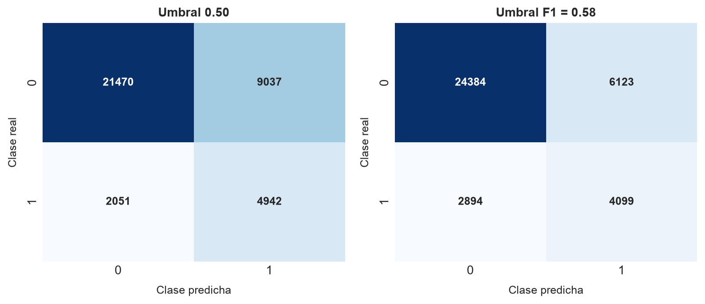
Con el umbral seteado en \(P(Y_{i}=1)=0.5\), el modelo recupera una proporción alta de positivos, pero paga ese comportamiento con muchos falsos positivos. Esto es coherente con el uso del hiperparámetro auto_class_weights="Balanced": Le pedimos al modelo que no ignore la clase minoritaria. Al mover el umbral hacia el valor que maximiza F1, disminuye la cantidad de falsos positivos, pero también caen los verdaderos positivos. Ninguno de los dos umbrales es “el correcto” en términos abstractos. La elección depende del costo de decisión asociado al error. Si estuviéramos detectando eventos críticos de seguridad o fraude, probablemente aceptaríamos más falsos positivos para no perder positivos reales. Si cada alerta requiere una investigación cara, preferiríamos un umbral más conservador.
También podemos observar el desempeño del modelo como problema de ranking:
# Calculamos el recorrido de la curva ROC.
catdat_fpr, catdat_tpr, _ = roc_curve(
y_catdat_valid,
catdat_valid_proba,
)
# Calculamos la línea base de tradeoff de precision vs sensibilidad.
catdat_positive_rate = y_catdat_valid.mean()# Construimos las curvas ROC y PR.
fig, axes = plt.subplots(nrows=1, ncols=2, figsize=(9, 4))
axes[0].plot(
catdat_fpr,
catdat_tpr,
color="navy",
lw=1.6,
label=f"AUC = {catdat_metrics.loc[0, 'Valor']:.3f}",
)
axes[0].plot([0, 1], [0, 1], color="gray", lw=1.0, linestyle="--")
axes[0].set_xlabel("Tasa de falsos positivos", fontsize=10, labelpad=8)
axes[0].set_ylabel("Tasa de verdaderos positivos", fontsize=10, labelpad=8)
axes[0].set_title("Curva ROC", fontsize=11, fontweight="bold")
axes[0].legend(loc="lower right", fontsize=9)
axes[1].plot(
catdat_recall,
catdat_precision,
color="firebrick",
lw=1.6,
label=f"AP = {catdat_metrics.loc[1, 'Valor']:.3f}",
)
axes[1].axhline(
catdat_positive_rate,
color="gray",
lw=1.0,
linestyle="--",
label=f"Base = {catdat_positive_rate:.3f}",
)
axes[1].set_xlabel("Recall", fontsize=10, labelpad=8)
axes[1].set_ylabel("Precisión", fontsize=10, labelpad=8)
axes[1].set_title("Curva precision-recall", fontsize=11, fontweight="bold")
axes[1].legend(loc="upper right", fontsize=9)
plt.tight_layout()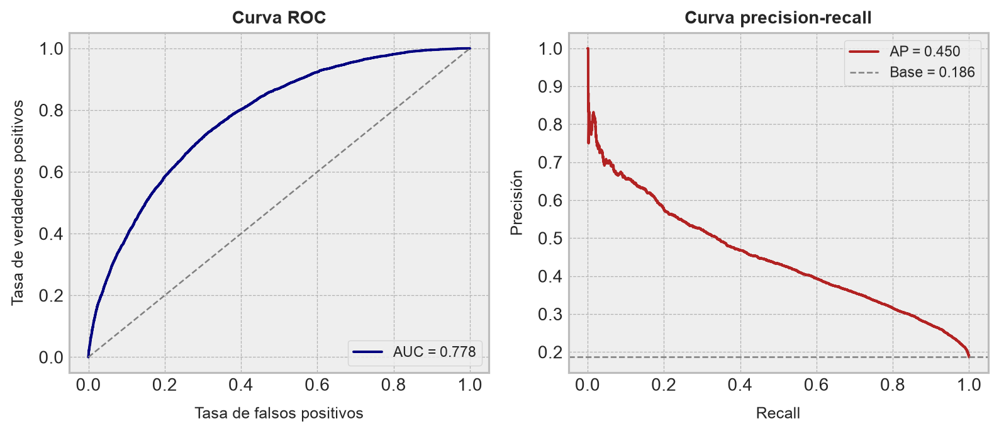
La curva ROC se mantiene claramente sobre la línea de no discriminación, por lo que el modelo discrimina mejor que el azar. Sin embargo, la curva de precisión versus sensibilidad muestra una historia más exigente: Lograr una sensibilidad alta obliga a sacrificar precisión, porque la clase positiva no domina el conjunto de datos. Esta lectura es muy útil para problemas industriales. Supongamos que target=1 representara una condición operacional no deseada, una anomalía o una oportunidad de mejora. El modelo podría ser muy valioso para priorizar inspecciones, pero no necesariamente para tomar acciones automáticas sin revisión humana. El algoritmo CatBoost nos entrega un ranking útil; la política de intervención debe decidir dónde cortar ese ranking.
Finalmente, revisemos qué variables usa más el modelo para realizar sus predicciones. Esto es una primera versión de importancia de variables:
# Calculamos la importancia relativa de las variables.
catdat_importance = (
pd.DataFrame(
{
"Variable": catdat_features,
"Importancia": catdat_model.get_feature_importance(),
}
)
.sort_values("Importancia", ascending=False)
.reset_index(drop=True)
)
# Mostramos en pantalla las primeras 15 variables en el ranking.
catdat_importance.head(15)| Variable | Importancia | |
|---|---|---|
| 0 | ord_3 | 10.877047 |
| 1 | month | 8.039990 |
| 2 | ord_2 | 7.912234 |
| 3 | ord_5 | 7.112029 |
| 4 | nom_8 | 6.698214 |
| 5 | ord_0 | 6.625927 |
| 6 | nom_7 | 5.869997 |
| 7 | nom_1 | 4.891650 |
| 8 | ord_4 | 4.880773 |
| 9 | ord_1 | 4.597732 |
| 10 | bin_0 | 4.480526 |
| 11 | nom_3 | 3.867847 |
| 12 | day | 3.794014 |
| 13 | bin_2 | 3.488488 |
| 14 | nom_2 | 3.006535 |
Llevemos este resultado a un gráfico:
fig, ax = plt.subplots(figsize=(9, 5))
top_importance = catdat_importance.head(15).iloc[::-1]
ax.barh(
top_importance["Variable"],
top_importance["Importancia"],
color="dodgerblue",
edgecolor="white",
)
ax.set_xlabel("Importancia relativa", fontsize=11, labelpad=10)
ax.set_ylabel("Variable", fontsize=11, labelpad=10)
ax.set_title(
"Importancia de variables conforme el algoritmo CatBoost",
fontsize=13,
fontweight="bold",
)
plt.tight_layout()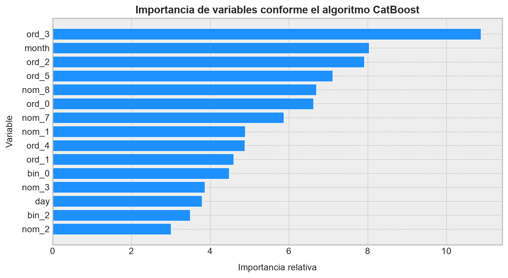
El ranking de importancia es interesante por dos razones. Primero, varias variables ordinales (ord_3, ord_2, ord_5, ord_0) aparecen entre las más influyentes. Esto sugiere que el orden incorporado en esas categorías contiene señal útil para separar clases. Segundo, variables nominales de cardinalidad media o alta, como nom_8 y nom_7, también aparecen con importancia relevante. Esta es una buena señal para el algoritmo CatBoost: El modelo está aprovechando categorías que serían incómodas de representar manualmente mediante one-hot encoding, especialmente si quisiéramos evitar matrices muy dispersas.
Ahora bien, conviene detenerse un momento en qué significa exactamente esta importancia. En este caso, get_feature_importance() devuelve por defecto una medida del tipo cambio en valores predichos (PredictionValuesChange). No se trata de una prueba causal ni de una correlación marginal simple entre una variable y el objetivo. La idea es mirar cuánto cambian las predicciones del ensamble cuando una variable participa en las divisiones internas de los árboles.
Recordemos que CatBoost usa árboles simétricos. En un árbol \(h_p\) de profundidad \(d\), cada nivel \(q\) usa una regla de partición \(s_q(\mathbf{x})\). Si la regla del nivel \(q\) utiliza la variable \(j\), entonces dicha variable separa pares de hojas que son idénticas en todas las demás decisiones del árbol, pero difieren justamente en la decisión inducida por \(s_q\). Para un par de hojas hermanas asociadas a esa división, denotemos sus valores terminales por \(v_1\) y \(v_2\), y el número de observaciones de entrenamiento que caen en ellas por \(c_1\) y \(c_2\). CatBoost calcula primero el valor promedio ponderado del par:
\[ \bar{v}=\frac{c_1v_1+c_2v_2}{c_1+c_2} \tag{3.38} \]
Luego, la contribución de esa partición al cambio de predicción puede escribirse como
\[ \Delta_{p,q}(j)= c_1(v_1-\bar{v})^2+c_2(v_2-\bar{v})^2 \tag{3.39} \]
Esta cantidad es grande cuando una división asociada a la variable \(j\) separa hojas con valores terminales muy distintos y, además, esas hojas reciben una cantidad relevante de observaciones. Dicho de otra forma: Una variable es importante si aparece en particiones que cambian de manera sustantiva el valor predicho para muchos puntos.
La importancia total de una variable se obtiene acumulando estas contribuciones a través de todos los árboles y todas las profundidades donde la variable participa:
\[ I_j=\sum_{p=1}^{r}\sum_{q=1}^{d_p} \mathbfup{1}\{j_{pq}=j\}\Delta_{p,q}(j) \tag{3.40} \]
donde \(j_{pq}\) representa la variable utilizada por el árbol \(p\) en el nivel \(q\). Finalmente, CatBoost normaliza estos valores para que el ranking sea más fácil de leer:
\[ \widetilde{I}_j= 100\frac{I_j}{\sum_{\ell=1}^{n}I_{\ell}} \tag{3.41} \]
Por eso las importancias aparecen como cantidades relativas y no como efectos en unidades naturales del problema. Esta normalización es cómoda, pero también exige cuidado interpretativo. Si dos variables están fuertemente asociadas, el modelo puede repartir importancia entre ellas; si una variable categórica aparece dentro de combinaciones internas generadas por CatBoost, parte de su efecto puede provenir de interacciones y no sólo de su señal individual. Por lo tanto, el gráfico anterior debe leerse como una medida de uso predictivo dentro del ensamble, no como una afirmación causal del tipo “esta variable produce la clase positiva”.
En nuestro caso, que las variables ord_3, month, ord_2 y ord_5 aparezcan arriba indica que las particiones basadas en esas variables modifican bastante las predicciones del modelo. La presencia de nom_8 y nom_7 también es coherente con el propósito del ejercicio: CatBoost logra extraer señal de variables nominales con cardinalidad no trivial sin expandirlas manualmente en una matriz dispersa. Si este fuera un problema operacional real, el siguiente paso no sería quedarnos mirando el ranking con cara solemne, sino cruzarlo con conocimiento de proceso: ¿esas categorías representan campañas, frentes, turnos, tipos de mineral o estados de equipo? Sólo ahí la importancia estadística empieza a transformarse en una hipótesis operacional útil.
La conclusión del ejemplo es bastante clara. El algoritmo CatBoost no logra una separación perfecta, pero sí extrae señal predictiva real desde un conjunto de variables categóricas con valores faltantes, cardinalidades heterogéneas y clase minoritaria. El desempeño obtenido es coherente con un problema donde las categorías contienen información, pero no determinan completamente el objetivo. Desde una perspectiva minera, este ejercicio se parece a modelar eventos discretos a partir de etiquetas operacionales: Dominios, campañas, turnos, frentes, equipos, rutas o estados discretos. El modelo puede ordenar riesgos y oportunidades; la decisión final sigue requiriendo entender costos, umbrales y consecuencias operacionales. ◼︎
Ejemplo 3.3 – Clasificación con variables mixtas en Bank Marketing: En el ejemplo anterior usamos un conjunto de datos construido casi como un laboratorio de variables categóricas. Ahora pasaremos a un problema más parecido a una aplicación de negocio real: Predecir si un cliente suscribirá un depósito bancario a plazo después de una campaña de marketing telefónico. Para ello usaremos el conjunto de datos UCI Bank Marketing, originalmente estudiado por Moro, Cortez y Rita (2014), el cual contiene información de clientes, campañas, historial de contacto e indicadores macroeconómicos.
El problema no pertenece al ámbito de la minería, pero tiene una estructura muy reconocible para cualquiera que trabaje en operaciones. Hay unidades sobre las que podemos decidir una acción, variables de contexto, variables categóricas, variables numéricas, eventos históricos y una respuesta binaria. En una planta o mina, podríamos imaginar algo análogo: ¿Conviene intervenir un equipo? ¿Conviene cambiar una estrategia de operación? ¿Conviene priorizar una inspección? En todos esos casos queremos estimar una probabilidad de éxito o riesgo a partir de datos mixtos.
La diferencia clave respecto del ejemplo anterior es que aquí sí tenemos variables interpretables. Por ejemplo, job, marital, education, contact, month, day_of_week y poutcome son categóricas. En cambio, age, campaign, pdays, previous, euribor3m y nr.employed son numéricas. Esta mezcla es ideal para el algoritmo CatBoost, porque nos permite declarar explícitamente cuáles columnas son categóricas sin destruir la estructura numérica del resto de las variables.
Los archivos quedan disponibles para descarga directa:
Usaremos el archivo bank-additional-full.csv, porque incorpora variables sociales y macroeconómicas adicionales que enriquecen el ejercicio. Partimos leyendo el archivo desde disco:
# Accedemos a nuestro conjunto de datos. Notemos que éste usa punto y coma como separador.
bank_data = pd.read_csv("datasets/bank-additional/bank-additional-full.csv", sep=";")
# Revisamos sus dimensiones.
bank_data.shape(41188, 21)El conjunto de datos contiene \(41188\) registros y \(21\) columnas. La variable objetivo se llama y, y toma los valores yes y no, indicando si el cliente suscribió o no el depósito a plazo ofrecido por la campaña. Como de costumbre, revisamos las primeras filas antes de modelar:
# Inspeccionamos algunas filas del conjunto de datos.
bank_data.head()| age | job | marital | education | default | housing | loan | contact | month | day_of_week | ... | campaign | pdays | previous | poutcome | emp.var.rate | cons.price.idx | cons.conf.idx | euribor3m | nr.employed | y | |
|---|---|---|---|---|---|---|---|---|---|---|---|---|---|---|---|---|---|---|---|---|---|
| 0 | 56 | housemaid | married | basic.4y | no | no | no | telephone | may | mon | ... | 1 | 999 | 0 | nonexistent | 1.1 | 93.994 | -36.4 | 4.857 | 5191.0 | no |
| 1 | 57 | services | married | high.school | unknown | no | no | telephone | may | mon | ... | 1 | 999 | 0 | nonexistent | 1.1 | 93.994 | -36.4 | 4.857 | 5191.0 | no |
| 2 | 37 | services | married | high.school | no | yes | no | telephone | may | mon | ... | 1 | 999 | 0 | nonexistent | 1.1 | 93.994 | -36.4 | 4.857 | 5191.0 | no |
| 3 | 40 | admin. | married | basic.6y | no | no | no | telephone | may | mon | ... | 1 | 999 | 0 | nonexistent | 1.1 | 93.994 | -36.4 | 4.857 | 5191.0 | no |
| 4 | 56 | services | married | high.school | no | no | yes | telephone | may | mon | ... | 1 | 999 | 0 | nonexistent | 1.1 | 93.994 | -36.4 | 4.857 | 5191.0 | no |
5 rows × 21 columns
Antes de entrenar cualquier modelo, conviene entender qué representa cada columna. Esta es una práctica simple, pero evita una cantidad absurda de errores: No todas las variables disponibles son variables legítimas para predicción, no todas las variables categóricas tienen el mismo significado y no todas las variables numéricas son sensores o atributos individuales. En este dataset, las variables pueden agruparse en cuatro familias: Información del cliente, información de contacto, historial de campañas e indicadores de contexto económico.
| Variable | Tipo | Significado |
|---|---|---|
age |
Numérica | Edad del cliente. |
job |
Categórica | Tipo de ocupación del cliente, por ejemplo admin., technician, blue-collar, student, retired o unknown. |
marital |
Categórica | Estado civil del cliente. La categoría divorced incluye clientes divorciados o viudos. |
education |
Categórica | Nivel educacional declarado, incluyendo categorías como basic.4y, high.school, professional.course y university.degree. |
default |
Categórica | Indica si el cliente posee crédito en incumplimiento. Puede tomar valores yes, no o unknown. |
housing |
Categórica | Indica si el cliente posee crédito hipotecario. |
loan |
Categórica | Indica si el cliente posee préstamo personal. |
contact |
Categórica | Canal de contacto utilizado en la campaña, por ejemplo cellular o telephone. |
month |
Categórica | Mes del último contacto realizado en la campaña. |
day_of_week |
Categórica | Día de la semana del último contacto. |
duration |
Numérica | Duración de la última llamada, medida en segundos. Esta variable se conoce sólo después del contacto. |
campaign |
Numérica discreta | Número de contactos realizados durante la campaña actual para ese cliente, incluyendo el último contacto. |
pdays |
Numérica discreta | Número de días desde el último contacto de una campaña previa. El valor 999 indica que el cliente no fue contactado previamente. |
previous |
Numérica discreta | Número de contactos realizados antes de la campaña actual. |
poutcome |
Categórica | Resultado de la campaña de marketing anterior: success, failure o nonexistent. |
emp.var.rate |
Numérica | Tasa trimestral de variación del empleo. Representa contexto económico agregado. |
cons.price.idx |
Numérica | Índice mensual de precios al consumidor. |
cons.conf.idx |
Numérica | Índice mensual de confianza del consumidor. |
euribor3m |
Numérica | Tasa Euribor a tres meses. |
nr.employed |
Numérica | Número trimestral de empleados, usado como indicador económico agregado. |
y |
Categórica binaria | Variable objetivo. Indica si el cliente suscribió (yes) o no (no) el depósito a plazo. |
Existe una columna que merece una advertencia inmediata, correspondiente a duration. Esta variable registra la duración de la última llamada. La propia documentación adjunta al dataset advierte que esta columna afecta fuertemente la respuesta, pero no se conoce antes de realizar la llamada. Si la incluimos en un modelo cuyo objetivo es decidir antes de contactar al cliente, estaríamos usando información del futuro; es decir, caemos en data leakage. En términos de minería, sería como intentar predecir una falla usando una variable que sólo se mide después de que la falla ya ocurrió. Por lo tanto, para construir un modelo operacionalmente honesto, excluiremos duration:
# Eliminamos la respuesta y la variable `duration`.
bank_feature_cols = [
col_j for col_j in bank_data.columns
if col_j not in ["y", "duration"]
]
# Separamos variables de entrada y de respuesta.
X_bank = bank_data[bank_feature_cols].copy()
y_bank = (bank_data["y"] == "yes").astype(int)Ahora identificamos qué columnas serán tratadas como categóricas. Como antes, no necesitamos transformarlas manualmente mediante codificaciones de tipo one-hot. En este caso, basta con entregarle al modelo la lista de columnas categóricas:
# Identificamos columnas categóricas usando el tipo de dato.
bank_cat_features = [
col_j for col_j in X_bank.columns
if (
pd.api.types.is_string_dtype(X_bank[col_j])
or X_bank[col_j].dtype == "object"
)
]
# El resto de columnas serán tratadas como numéricas.
bank_num_features = [
col_j for col_j in X_bank.columns
if col_j not in bank_cat_features
]
# Mostramos en pantalla cada una.
bank_cat_features, bank_num_features(['job',
'marital',
'education',
'default',
'housing',
'loan',
'contact',
'month',
'day_of_week',
'poutcome'],
['age',
'campaign',
'pdays',
'previous',
'emp.var.rate',
'cons.price.idx',
'cons.conf.idx',
'euribor3m',
'nr.employed'])Construyamos un reporte breve para observar cardinalidad, tipo de dato y presencia de la etiqueta unknown, que en este conjunto de datos funciona como valor faltante explícito en algunas variables categóricas:
# Resumen estructural de variables.
bank_feature_report = pd.DataFrame(
{
"Variable": X_bank.columns,
"Tipo": [str(X_bank[col].dtype) for col in X_bank.columns],
"Valores únicos": [
X_bank[col].nunique(dropna=False)
for col in X_bank.columns
],
"Unknown (%)": [
100 * X_bank[col].eq("unknown").mean()
if col in bank_cat_features else np.nan
for col in X_bank.columns
],
}
)
# Mostramos este reporte en pantalla.
bank_feature_report| Variable | Tipo | Valores únicos | Unknown (%) | |
|---|---|---|---|---|
| 0 | age | int64 | 78 | NaN |
| 1 | job | str | 12 | 0.801204 |
| 2 | marital | str | 4 | 0.194231 |
| 3 | education | str | 8 | 4.202680 |
| 4 | default | str | 3 | 20.872584 |
| 5 | housing | str | 3 | 2.403613 |
| 6 | loan | str | 3 | 2.403613 |
| 7 | contact | str | 2 | 0.000000 |
| 8 | month | str | 10 | 0.000000 |
| 9 | day_of_week | str | 5 | 0.000000 |
| 10 | campaign | int64 | 42 | NaN |
| 11 | pdays | int64 | 27 | NaN |
| 12 | previous | int64 | 8 | NaN |
| 13 | poutcome | str | 3 | 0.000000 |
| 14 | emp.var.rate | float64 | 10 | NaN |
| 15 | cons.price.idx | float64 | 26 | NaN |
| 16 | cons.conf.idx | float64 | 26 | NaN |
| 17 | euribor3m | float64 | 316 | NaN |
| 18 | nr.employed | float64 | 11 | NaN |
La tabla anterior nos muestra que el problema tiene una cantidad moderada de categorías. No estamos frente a cardinalidades enormes como en nom_9 del ejemplo (3.2), pero sí frente a un caso realista de datos mixtos. Hay categorías de estado civil, educación, tipo de trabajo, resultado de campaña anterior y forma de contacto. En términos industriales, esto se parece más a un dataset operativo con variables de turno, frente, estado de equipo, campaña o tipo de material, combinadas con sensores numéricos.
También necesitamos mirar el balance de clases:
# Resumen del balance de clases.
bank_target_balance = (
bank_data["y"]
.value_counts()
.rename_axis("Clase")
.reset_index(name="Frecuencia")
)
bank_target_balance["Proporción"] = (
bank_target_balance["Frecuencia"]
/ bank_target_balance["Frecuencia"].sum()
)
# Mostramos este resumen en pantalla.
bank_target_balance| Clase | Frecuencia | Proporción | |
|---|---|---|---|
| 0 | no | 36548 | 0.887346 |
| 1 | yes | 4640 | 0.112654 |
# Graficamos la distribución de las clases para este problema.
fig, ax = plt.subplots(figsize=(9, 4))
ax.bar(
bank_target_balance["Clase"],
bank_target_balance["Proporción"],
color=["dodgerblue", "firebrick"],
edgecolor="white",
)
for i, row_i in bank_target_balance.iterrows():
ax.text(
i,
row_i["Proporción"] + 0.015,
f"{row_i['Proporción']:.1%}",
ha="center",
va="bottom",
fontsize=11,
fontweight="bold",
)
ax.set_ylim(0, 1.0)
ax.set_xlabel("Clase", fontsize=11, labelpad=10)
ax.set_ylabel("Proporción", fontsize=11, labelpad=10)
ax.set_title(
"Balance de clases para suscripción del depósito",
fontsize=13,
fontweight="bold",
)
plt.tight_layout()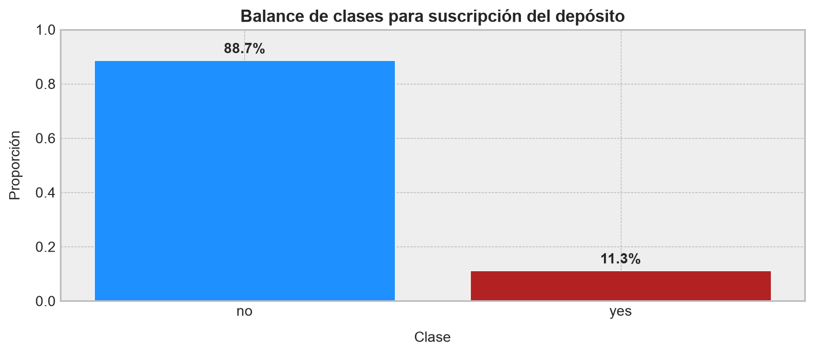
La clase positiva representa cerca del \(11.3\%\) de las observaciones. Esto vuelve inútil una lectura basada únicamente en exactitud: Un clasificador que siempre predice no tendría casi \(89\%\) de acierto, pero no serviría para encontrar clientes con mayor probabilidad de conversión. Por esta razón usaremos métricas de ranking y métricas sensibles al desbalance, tal como hicimos antes.
Para este ejemplo usaremos una separación aleatoria estratificada. Esto permite mantener una distribución comparable de clases entre entrenamiento y prueba, y resulta apropiado para explicar el flujo de modelamiento. En una aplicación productiva, especialmente si el modelo se usa campaña tras campaña, convendría evaluar también una validación temporal, donde entrenamos con campañas pasadas y probamos en campañas futuras:
# División estratificada entre entrenamiento y prueba.
X_bank_train, X_bank_test, y_bank_train, y_bank_test = train_test_split(
X_bank,
y_bank,
test_size=0.25,
random_state=42,
stratify=y_bank,
)
# Resumimos los resultados de esta división en un DataFrame.
pd.DataFrame(
{
"Conjunto": ["Entrenamiento", "Prueba"],
"Filas": [len(y_bank_train), len(y_bank_test)],
"Proporción clase positiva": [
y_bank_train.mean(),
y_bank_test.mean(),
],
},
)| Conjunto | Filas | Proporción clase positiva | |
|---|---|---|---|
| 0 | Entrenamiento | 30891 | 0.112654 |
| 1 | Prueba | 10297 | 0.112654 |
Entrenaremos ahora un modelo de clasificación vía CatBoostClassifier. Usaremos pesos automáticos para la clase positiva, porque nos interesa que el modelo no ignore los casos de conversión. En términos operacionales, esto equivale a decirle al modelo que encontrar oportunidades de conversión importa más que “inflar” la exactitud global prediciendo siempre la clase mayoritaria:
# Definimos el modelo CatBoost para clasificación binaria.
bank_model = CatBoostClassifier(
iterations=500,
learning_rate=0.06,
depth=6,
loss_function="Logloss",
eval_metric="AUC",
l2_leaf_reg=8,
auto_class_weights="Balanced",
random_seed=42,
allow_writing_files=False,
verbose=False,
)
# Entrenamos el modelo.
bank_model.fit(
X_bank_train,
y_bank_train,
cat_features=bank_cat_features,
eval_set=(X_bank_test, y_bank_test),
use_best_model=True,
verbose=False,
)CatBoostClassifier(allow_writing_files=False, auto_class_weights='Balanced', depth=6, eval_metric='AUC', iterations=500, l2_leaf_reg=8, learning_rate=0.06, loss_function='Logloss', random_seed=42, verbose=False)Calculamos probabilidades de clase positiva y construimos dos reglas de clasificación: Una usando el umbral estándar de discriminación \(P(y_{i}=1)=0.5\) y otra usando el umbral que maximiza el puntaje F1:
# Probabilidades estimadas para la clase positiva.
bank_test_proba = bank_model.predict_proba(X_bank_test)[:, 1]
# Clasificación con umbral fijo.
bank_pred_050 = (bank_test_proba >= 0.5).astype(int)
# Curva precision-recall para definir umbral por F1.
bank_precision, bank_recall, bank_thresholds = precision_recall_curve(
y_bank_test,
bank_test_proba,
)
bank_f1 = (
2 * bank_precision * bank_recall
/ (bank_precision + bank_recall + 1e-12)
)
bank_best_idx = np.nanargmax(bank_f1[:-1])
bank_best_threshold = bank_thresholds[bank_best_idx]
bank_pred_f1 = (bank_test_proba >= bank_best_threshold).astype(int)Resumimos los resultados:
# Métricas globales del clasificador.
bank_metrics = pd.DataFrame(
{
"Métrica": [
"Área bajo la curva ROC",
"Precisión ponderada",
"Exactitud balanceada (umbral en 0.5)",
"Valor umbral que maximiza F1",
"Precisión en umbral conforme F1",
"Sensibilidad en umbral conforme F1",
"F1 máximo obtenido",
],
"Valor": [
roc_auc_score(y_bank_test, bank_test_proba),
average_precision_score(y_bank_test, bank_test_proba),
balanced_accuracy_score(y_bank_test, bank_pred_050),
bank_best_threshold,
bank_precision[bank_best_idx],
bank_recall[bank_best_idx],
bank_f1[bank_best_idx],
],
}
)
# Mostramos los resultados en pantalla.
bank_metrics| Métrica | Valor | |
|---|---|---|
| 0 | Área bajo la curva ROC | 0.815671 |
| 1 | Precisión ponderada | 0.491662 |
| 2 | Exactitud balanceada (umbral en 0.5) | 0.761193 |
| 3 | Valor umbral que maximiza F1 | 0.718246 |
| 4 | Precisión en umbral conforme F1 | 0.491189 |
| 5 | Sensibilidad en umbral conforme F1 | 0.576724 |
| 6 | F1 máximo obtenido | 0.530531 |
El desempeño es bastante razonable para un modelo que, en efecto, excluye la columna duration. El área bajo la curva ROC queda cerca de \(0.82\), lo que significa que el modelo ordena bastante bien clientes que suscriben por sobre clientes que no suscriben. La precisión promedio ponderada queda cerca de \(0.49\), muy por encima de la tasa base de positivos, que era cercana a \(0.11\). Esta comparación es importante: El modelo no sólo acierta más que el azar, sino que concentra efectivamente clientes convertibles en la parte alta del ranking.
La exactitud balanceada con umbral \(P(y_{i}=1)=0.5\) queda alrededor de \(0.76\). Esto muestra que el uso de pesos balanceados logra recuperar una fracción importante de positivos sin colapsar completamente la especificidad. Sin embargo, el umbral óptimo conforme F1 aparece alrededor de \(P(y_{i}=1)=0.72\), más alto que el valor estándar. Este resultado es muy interpretable: Al ponderar la clase positiva, el modelo se vuelve más sensible a casos de conversión, y por eso conviene subir el umbral si buscamos un equilibrio más sobrio entre precisión y sensibilidad.
Veamos las matrices de confusión asociadas:
# Cálculo de matrices de confusión para umbral de discriminación 0.5 y
# conforme puntaje F1.
bank_cm_050 = confusion_matrix(y_bank_test, bank_pred_050)
bank_cm_f1 = confusion_matrix(y_bank_test, bank_pred_f1)
# Mostramos los resultados en pantalla.
bank_cm_050, bank_cm_f1(array([[7971, 1166],
[ 406, 754]]),
array([[8444, 693],
[ 491, 669]]))fig, axes = plt.subplots(nrows=1, ncols=2, figsize=(9, 4))
for ax, cm, title in zip(
axes,
[bank_cm_050, bank_cm_f1],
["Umbral 0.50", f"Umbral F1 = {bank_best_threshold:.2f}"],
):
sns.heatmap(
cm,
annot=True,
fmt="d",
cmap="Blues",
cbar=False,
ax=ax,
annot_kws={"fontsize": 10, "fontweight": "bold"},
)
ax.set_title(title, fontsize=11, fontweight="bold")
ax.set_xlabel("Clase predicha", fontsize=10, labelpad=8)
ax.set_ylabel("Clase real", fontsize=10, labelpad=8)
plt.tight_layout()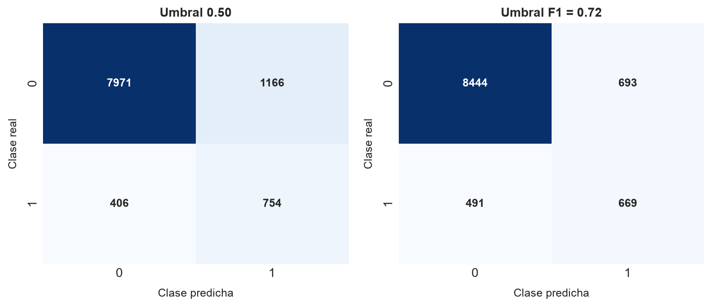
La matriz con umbral \(P(y_{i}=1)=0.5\) muestra una estrategia agresiva: Se recuperan muchos clientes que sí suscriben, pero también aparecen muchísimos falsos positivos. En un escenario comercial, eso podría ser aceptable si el costo de contactar a un cliente adicional es bajo. En cambio, el umbral ajustado por el puntaje F1 reduce falsos positivos de manera notoria, aunque sacrifica parte de los verdaderos positivos. Esta es una decisión de negocio, no solamente estadística. Si el equipo comercial tiene capacidad limitada, conviene priorizar clientes de alta probabilidad. Si la campaña busca cobertura amplia, un umbral más bajo podría ser razonable.
Miremos ahora el comportamiento del modelo como ranking:
# Curvas ROC y trade-off entre precisión y sensibilidad.
bank_fpr, bank_tpr, _ = roc_curve(y_bank_test, bank_test_proba)
bank_positive_rate = y_bank_test.mean()fig, axes = plt.subplots(nrows=1, ncols=2, figsize=(9, 4))
axes[0].plot(
bank_fpr,
bank_tpr,
color="dodgerblue",
lw=1.6,
label=f"AUC = {bank_metrics.loc[0, 'Valor']:.3f}",
)
axes[0].plot([0, 1], [0, 1], color="gray", lw=1.0, linestyle="--")
axes[0].set_xlabel("Tasa de falsos positivos", fontsize=10, labelpad=8)
axes[0].set_ylabel("Tasa de verdaderos positivos", fontsize=10, labelpad=8)
axes[0].set_title("Curva ROC", fontsize=11, fontweight="bold")
axes[0].legend(loc="lower right", fontsize=9)
axes[1].plot(
bank_recall,
bank_precision,
color="firebrick",
lw=1.6,
label=f"AP = {bank_metrics.loc[1, 'Valor']:.3f}",
)
axes[1].axhline(
bank_positive_rate,
color="gray",
lw=1.0,
linestyle="--",
label=f"Base = {bank_positive_rate:.3f}",
)
axes[1].set_xlabel("Recall", fontsize=10, labelpad=8)
axes[1].set_ylabel("Precisión", fontsize=10, labelpad=8)
axes[1].set_title("Curva de precisión versus sensibilidad", fontsize=11, fontweight="bold")
axes[1].legend(loc="upper right", fontsize=9)
plt.tight_layout()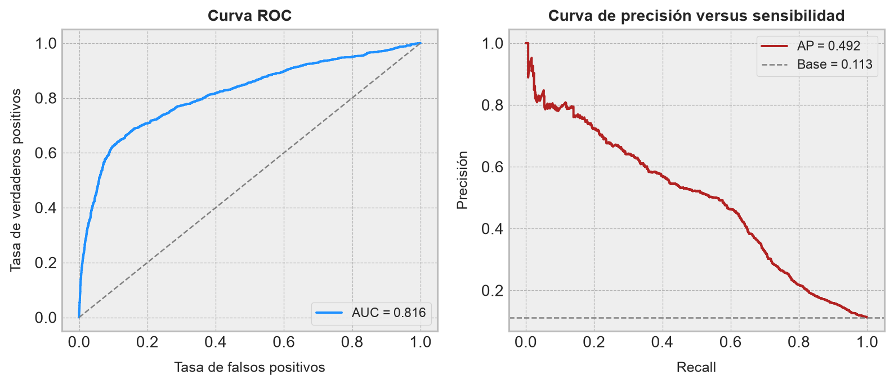
La curva ROC confirma que el modelo discrimina con holgura respecto de la línea de no discriminación. La curva de trade-off entre precisión y sensibilidad es más exigente, y por eso resulta más útil en este caso: La clase positiva es pequeña, de modo que cada aumento de sensibilidad suele traer más falsos positivos. Operacionalmente, el gráfico nos dice que el algoritmo CatBoost puede construir un ranking útil de clientes, pero no convierte el problema en determinístico. El valor práctico está en ordenar prioridades, no en prometer una predicción infalible.
También podemos revisar la proporción observada de conversión por deciles de probabilidad predicha. Esta tabla es muy útil para transformar la salida probabilística del modelo en una lectura operacional:
# Construimos deciles de riesgo o propensión estimada.
bank_deciles = pd.DataFrame(
{
"Probabilidad estimada": bank_test_proba,
"Clase real": y_bank_test.to_numpy(),
}
)
bank_deciles["Decil"] = pd.qcut(
bank_deciles["Probabilidad estimada"],
q=10,
labels=False,
duplicates="drop",
) + 1
# Resumimos los resultados de esta partición.
bank_decile_report = (
bank_deciles
.groupby("Decil", as_index=False)
.agg(
Observaciones=("Clase real", "size"),
Conversiones=("Clase real", "sum"),
Probabilidad_media=("Probabilidad estimada", "mean"),
Tasa_observada=("Clase real", "mean"),
)
)
# Y mostramos este resultado en pantalla.
bank_decile_report| Decil | Observaciones | Conversiones | Probabilidad_media | Tasa_observada | |
|---|---|---|---|---|---|
| 0 | 1 | 1030 | 33 | 0.140080 | 0.032039 |
| 1 | 2 | 1030 | 27 | 0.189974 | 0.026214 |
| 2 | 3 | 1029 | 28 | 0.222941 | 0.027211 |
| 3 | 4 | 1030 | 46 | 0.254122 | 0.044660 |
| 4 | 5 | 1030 | 54 | 0.284462 | 0.052427 |
| 5 | 6 | 1029 | 53 | 0.318281 | 0.051506 |
| 6 | 7 | 1030 | 64 | 0.360340 | 0.062136 |
| 7 | 8 | 1029 | 81 | 0.419596 | 0.078717 |
| 8 | 9 | 1030 | 228 | 0.631952 | 0.221359 |
| 9 | 10 | 1030 | 546 | 0.866074 | 0.530097 |
fig, ax = plt.subplots(figsize=(9, 4))
ax.plot(
bank_decile_report["Decil"],
bank_decile_report["Tasa_observada"],
marker="o",
color="cornflowerblue",
lw=1.8,
label="Tasa observada",
)
ax.axhline(
y_bank_test.mean(),
color="gray",
linestyle="--",
lw=1.0,
label="Tasa base",
)
ax.set_xlabel("Decil de probabilidad estimada", fontsize=11, labelpad=10)
ax.set_ylabel("Tasa observada de conversión", fontsize=11, labelpad=10)
ax.set_title(
"Conversión observada según ranking del modelo",
fontsize=13,
fontweight="bold",
)
ax.set_xticks(bank_decile_report["Decil"])
ax.legend(loc="upper left", fontsize=9)
plt.tight_layout()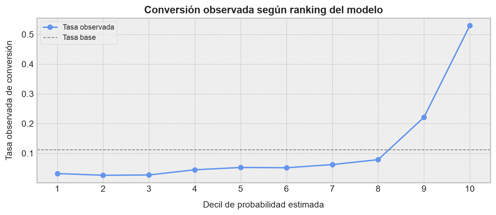
Este gráfico suele ser más convincente en términos de negocio que una métrica abstracta. Si los últimos deciles tienen una tasa de conversión bastante mayor que la tasa base, entonces el modelo sirve para priorizar contactos. No necesitamos que el clasificador sea perfecto; necesitamos que el ranking sea útil. En una operación minera, la analogía sería priorizar inspecciones, muestras, mantenimiento, análisis metalúrgicos o revisiones de terreno: Si el modelo concentra los casos de interés en la parte alta, ya aporta valor aunque no acierte todo.
Ahora bien, existe una diferencia importante entre ordenar bien y entregar probabilidades bien calibradas. Un modelo puede producir un ranking excelente y, al mismo tiempo, asignar probabilidades demasiado optimistas o demasiado conservadoras. Si sólo queremos priorizar clientes, basta con que el orden relativo sea bueno. Pero si queremos interpretar una salida como “este cliente tiene un \(70\%\) de probabilidad de suscribir”, entonces necesitamos evaluar calibración.
Decimos que un clasificador está bien calibrado cuando, entre todos los casos a los que asigna una probabilidad cercana a \(p\), la proporción empírica de positivos también es cercana a \(p\). Por ejemplo, si tomamos todos los clientes con probabilidad estimada cercana a \(0.30\), esperaríamos que aproximadamente un \(30\%\) de ellos termine suscribiendo el depósito. Esta idea es especialmente importante en contextos operacionales, porque las probabilidades suelen terminar conectadas con decisiones de capacidad, costos, priorización y umbrales de intervención.
Para visualizar esto, construiremos una curva de calibración. Agruparemos las observaciones del conjunto de prueba en intervalos de probabilidad estimada, y compararemos la probabilidad media predicha con la frecuencia real de conversión observada:
# Construimos la curva de calibración usando bins de tamaño similar.
bank_prob_true, bank_prob_pred = calibration_curve(
y_bank_test,
bank_test_proba,
n_bins=10,
strategy="quantile",
)
# Calculamos el Brier score, que mide error cuadrático medio probabilístico.
bank_brier = brier_score_loss(y_bank_test, bank_test_proba)
bank_brier0.14872928007203443El coeficiente de Brier corresponde al error cuadrático medio entre la clase observada \(y_i\in\{0,1\}\) y la probabilidad estimada \(\widehat{p}_i=P(y_i=1\mid\mathbf{x}_i)\). En términos formales,
\[ \mathrm{BS}=\frac{1}{m_{\mathrm{test}}} \sum_{i=1}^{m_{\mathrm{test}}} \left(y_i-\widehat{p}_i\right)^2 \tag{3.42} \]
Valores más bajos indican mejores probabilidades. Sin embargo, el coeficiente de Brier mezcla dos cosas: Capacidad de discriminación y calibración. Por eso conviene mirarlo junto con la curva:
fig, axes = plt.subplots(
nrows=2,
ncols=1,
figsize=(9, 7),
gridspec_kw={"height_ratios": [2, 1]},
)
axes[0].plot(
[0, 1],
[0, 1],
color="black",
linestyle="--",
lw=1.2,
label="Calibración perfecta",
)
axes[0].plot(
bank_prob_pred,
bank_prob_true,
marker="s",
color="dodgerblue",
lw=1.8,
label="CatBoost",
)
axes[0].set_xlim(0, 1)
axes[0].set_ylim(0, 1)
axes[0].set_xlabel(
"Probabilidad media estimada",
fontsize=10,
labelpad=8,
)
axes[0].set_ylabel(
"Tasa observada de positivos",
fontsize=10,
labelpad=8,
)
axes[0].set_title(
f"Curva de calibración (Brier = {bank_brier:.3f})",
fontsize=12,
fontweight="bold",
)
axes[0].legend(loc="upper left", fontsize=9)
axes[1].hist(
bank_test_proba,
bins=np.linspace(0, 1, 21),
color="cornflowerblue",
edgecolor="white",
)
axes[1].set_xlim(0, 1)
axes[1].set_xlabel(
"Probabilidad estimada para la clase positiva",
fontsize=10,
labelpad=8,
)
axes[1].set_ylabel("Frecuencia", fontsize=10, labelpad=8)
axes[1].set_title(
"Distribución de probabilidades estimadas",
fontsize=12,
fontweight="bold",
)
plt.tight_layout()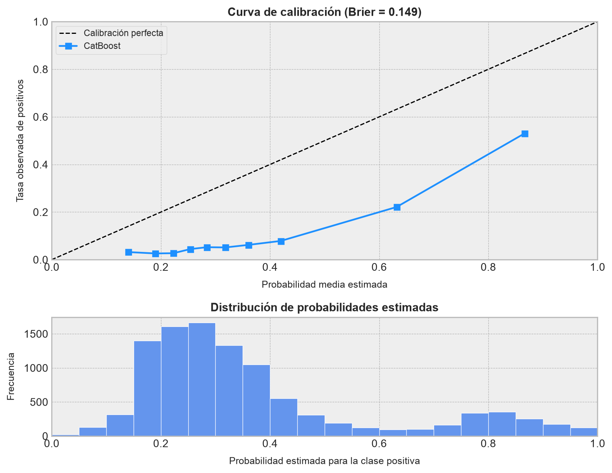
La lectura de esta figura complementa las métricas anteriores. Si la curva azul queda cerca de la diagonal, entonces las probabilidades pueden interpretarse con cierta confianza como frecuencias esperadas. Si la curva se ubica sistemáticamente sobre la diagonal, el modelo está subestimando la probabilidad real de conversión; si queda bajo la diagonal, la está sobreestimando. En este caso, el modelo entrega un ranking útil, pero no debemos tratar cada probabilidad como una verdad física exacta. La zona de probabilidades altas suele ser la más delicada, porque hay menos observaciones y porque los pesos de clase pueden empujar al modelo a ser más agresivo con la clase positiva.
Desde una perspectiva operacional, esto tiene una consecuencia concreta. Si usamos el modelo para ordenar clientes, las curvas ROC, precision versus sensibilidad y de ranking por deciles son suficientes para justificar priorización. Si queremos usar la probabilidad como insumo directo para calcular retorno esperado, capacidad de campaña o costo-beneficio, conviene calibrar explícitamente las probabilidades usando una técnica adicional, como calibración sigmoidal, calibración isotónica o una calibración por campaña. Dicho con cariño minero: El ranking nos dice dónde mirar primero; la calibración nos dice cuánto creerle al número que aparece al lado.
Finalmente, revisamos la importancia de las variables de entrada en las estimaciones realizadas por el modelo:
# Importancia de variables conforme el algoritmo CatBoost.
bank_importance = (
pd.DataFrame(
{
"Variable": bank_feature_cols,
"Importancia": bank_model.get_feature_importance(),
}
)
.sort_values("Importancia", ascending=False)
.reset_index(drop=True)
)# Graficamos el ranking anterior.
fig, ax = plt.subplots(figsize=(9, 5))
top_bank_importance = bank_importance.head(15).iloc[::-1]
ax.barh(
top_bank_importance["Variable"],
top_bank_importance["Importancia"],
color="dodgerblue",
edgecolor="white",
)
ax.set_xlabel("Importancia relativa", fontsize=11, labelpad=10)
ax.set_ylabel("Variable", fontsize=11, labelpad=10)
ax.set_title(
"Importancia de variables en nuestro problema",
fontsize=13,
fontweight="bold",
)
plt.tight_layout()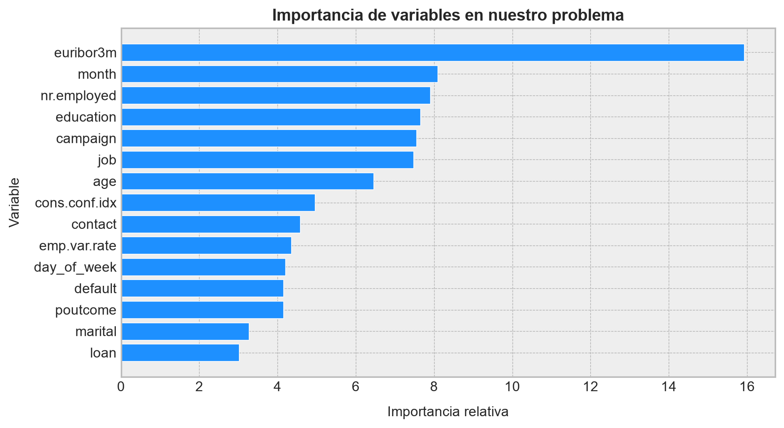
El ranking es consistente con la naturaleza del problema. Las variables euribor3m, nr.employed, emp.var.rate, cons.conf.idx y cons.price.idx capturan contexto económico agregado; no describen al cliente individual, sino el ambiente en el que ocurre la campaña. Que aparezcan arriba indica que la propensión a suscribir no depende únicamente del perfil del cliente, sino también del momento macroeconómico. Esto es muy razonable: En condiciones económicas distintas, la misma persona puede reaccionar de manera diferente ante un producto financiero.
También aparecen variables de campaña y contacto, como month, contact, day_of_week, campaign y poutcome. Estas variables describen cómo y cuándo se realizó la interacción. Desde una mirada operacional, esto es oro puro: El modelo no sólo aprende quién podría convertir, sino bajo qué condiciones de campaña la conversión parece más probable. En una planta o faena, este tipo de lectura equivale a distinguir entre variables de estado del sistema y variables de política operacional. Las primeras describen el contexto; las segundas son palancas que, al menos parcialmente, podemos modificar.
El cierre de este ejemplo es distinto al de Cat in the Dat II. Allí aprendimos que el algoritmo CatBoost trabaja bien con categorías anónimas y cardinalidades incómodas. Aquí vemos que también funciona bien en un problema mixto, donde conviven variables categóricas interpretables y variables numéricas de contexto. La lección práctica es clara: El algoritmo CatBoost es especialmente atractivo cuando el problema tabular no justifica una ingeniería manual pesada de categorías, pero sí exige mantener una lectura operacional del resultado. Nos permite entrenar rápido, validar con métricas adecuadas, ajustar umbrales según costos y revisar importancias para formular hipótesis de negocio o de proceso. ◼︎
3.4 Comentarios finales
En esta entrada estudiamos dos formas modernas de llevar la idea de gradient boosting hacia problemas tabulares reales. Los algoritmos LightGBM y CatBoost comparten el espíritu del boosting aditivo: Construir un predictor fuerte mediante una sucesión de modelos base que corrigen errores residuales. Sin embargo, cada uno resuelve dolores distintos. LightGBM pone el énfasis en eficiencia computacional, histogramas, muestreo basado en gradientes y agrupación de variables dispersas. CatBoost, en cambio, pone el foco en el tratamiento estadísticamente cuidadoso de variables categóricas, codificaciones ordenadas, reducción de fuga de información y árboles simétricos.
La consecuencia práctica es importante: No existe una única herramienta universalmente dominante. Si el problema es masivo, mayormente numérico y exige iterar rápido, el algoritmo LightGBM suele ser una alternativa extremadamente competitiva. Si el problema contiene muchas categorías, niveles raros, etiquetas operacionales o variables discretas difíciles de codificar manualmente, el algoritmo CatBoost ofrece una ruta muy limpia para modelar sin convertir el preprocesamiento en una colección de parches artesanales.
También vimos que entrenar un buen modelo no termina en llamar a fit(). En los ejemplos revisamos métricas de ranking, matrices de confusión, umbrales de decisión, curvas de precision versus sensibilidad, diagnósticos de residuales, importancia de variables, análisis por deciles y calibración de probabilidades. Esta última distinción es especialmente importante: Un modelo puede ordenar bien los casos sin entregar probabilidades perfectamente calibradas. En aplicaciones industriales, esa diferencia separa dos usos distintos del modelo: priorizar acciones o estimar retornos esperados.
Desde una mirada minera y operacional, la lección central es sobria: Estos modelos son herramientas poderosas para encontrar estructura en datos tabulares complejos, pero su utilidad depende de cómo se validan, cómo se interpretan y cómo se conectan con decisiones reales. Una predicción no es una decisión; es un insumo para decidir mejor. El trabajo del modelador consiste en construir ese puente con cuidado: Entender el proceso, respetar la temporalidad de los datos, evitar fugas de información, calibrar expectativas y traducir resultados estadísticos en hipótesis operacionales verificables.
Con esto cerramos el recorrido por modelos de ensamble especializados. En la siguiente etapa, el foco natural será preguntarnos con más calma por qué los modelos deciden lo que deciden: Qué variables pesan, cómo interactúan, qué efectos son globales o locales, y cómo transformar un predictor flexible en una herramienta explicable para análisis, comunicación y toma de decisiones.